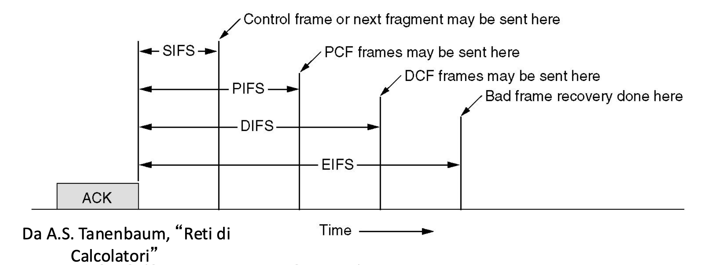

IP→ Progettato per funzionare a commutazione di pacchetto in modalità
connectionless.
identifica Host e router tramite indirizzi di lunghezza fissa,
raggruppandoli in reti IP.
Funzioni
Funzione
Descrizione
Version
Indica il formato dell’intestazione, attualmente 4
IHL
IP header length, lunghezza dell’intestazione
Type of service
Tipo di servizio richiesto, usato anche come sorta di priorità
Total length
Lunghezza totale del datagramma
Identification
Valore intero che identifica univocamente il datagramma
(pacchetto)
Flag
Vari flag utilizzati per il controllo della frammentazione dei
pacchetti -
Fragment offset
Indica quale è la posizione di questo frammento nel datagramma, come
distanza in unità di 64 bit dall’inizio
Flags per la frammentazione:
Bit 0: sempre 0
Bit 1 (DF - Don’t Fragment):
0 = si può frammentare
1 = non si può frammentare (nel caso fosse a 1 e fosse necessario
frammentarlo lo distruggo)
Bit 2 (MF - More Fragments):
0 = ultimo frammento (aiuta a riordimare i paccheti in arrivo, è
tecnicamente superfluo ma ci risparmia il calcolo di vedere quanto era
lungo)
1 = frammento intermedio
Calcolo del Fragment Offset: Il datagramma è diviso
in blocchi di 8 byte (64 bit) l’offset è calcolato in
unità di 8 byte dall’inizio del datagramma originale (non ho bisogno di
mappare tutti i bit ma posso mapparli a blocchi di 8 byte per ridurre a
13 il numero di bit necessari a tenerne traccia, ciò implica che la
frammentazione non potrà mai scendere sotto i 64 bit perché non sarei
più in grado di ricomporre il pacchetto)
Time to Live (TTL): Imposta un limite al numero di
hop che un pacchetto può attraversare,il valore iniziale tipicamente è
64 (massimo 255) decrementato di 1 ad ogni hop quando raggiunge 0, il
pacchetto viene scartato
Se non posso frammentare il pacchetto lo distruggo.
Fragment offset→ indica quale è la posizione di
questo frammento (della dimensione di 8 byte , 64 bit)nel datagramma,
come distanza dall’inizio. Il numero logico del primo blocco viene
scritto nel Fragment Offset del datagramma
Implementazione frammentazione:
Effettuata da qualsiasi apparato di rete dotato di protocollo.
I nodi intermedi non riassemblano, solo il terminale ricevente
Sono possibili frammentazioni multiple
Grazie alla numerazione tramite offset permette di rinumerare
facilmente i segmenti.
La segmentazione è fondamentale perché non sempre la dimensione del
pacchetto è corretta per essere elaborata dai macchinari disponibili
sulla rete
Riassemblaggio dei datagrammi: I frammenti possono
arrivare fuori sequenza o con tempi diversi. Il riassemblaggio avviene
solo al terminale di destinazione. Utilizza i campi
Identification, Flags e
Fragment Offset per ricostruire correttamente il
datagramma originale
Time to travel (TTL)→ max numero nodi
attraversabili
Protocol→ quale protocollo di livello superiore
appartengono i dati del datagramma
Header checksum→ controllo di errore di
intestazione. Ricalcolato da ogni nodo attraversato dal datagramma
Source and Destination→ indirizzi sorgente e
destinazione
Options→ lunghezza variabile perché contiene opzioni
relative al trasferimento
Padding→ bit inutili per fare tornare intestazione
multiplo di 32 bit
Instradamento IP
Internet → rete a commutazione di pacchetto, con più
percorsi disponibili
Come funziona internet → Rete di reti.
Diretto
Una consegna diretta avviene quando l’IP sorgente e
destinatario sono nella stessa rete. In questo caso, il pacchetto viene
inviato utilizzando il MAC del destinatario, che viene trovato tramite
il protocollo ARP se non già noto. ARP effettua una richiesta
broadcast per associare l’IP al MAC corretto.
Indiretto
Nella consegna indiretta, quando l’IP destinatario è
su un’altra rete, il pacchetto viene prima inviato al router della rete
sorgente. A livello di collegamento dati, il MAC sarà quello del router,
che instraderà il pacchetto verso il prossimo router fino a raggiungere
la rete di destinazione. Il TTL limita il numero massimo di salti.
Anche nei passaggi indiretti, ARP viene utilizzato per ottenere
il MAC del gateway successivo.
ICMP -> internet control message protocoll
L’ICMP (Internet Control Message Protocol) è un protocollo di rete
utilizzato per inviare messaggi di controllo e diagnostica all’interno
di reti IP. Trasporta direttamente su ip senza un
protocollo di trasporto. Serve a segnalare errori (ad esempio, host
irraggiungibile) e a fornire informazioni sullo stato della rete. ICMP
non trasporta dati applicativi, ma aiuta a gestire la
comunicazione tra dispositivi di rete. Viene utilizzato da strumenti
come ping (per verificare la raggiungibilità di un
host) e traceroute (per tracciare il percorso dei
pacchetti). Fa parte della famiglia dei protocolli IP, operando al
livello di rete.
Network IP → componente
elementare
Isola che contiene calcolatori che fanno da Host
Gateway o Router → componenti che fanno da
ponte.
Ogni Network IP viene implementata con una tecnologia specifica, per
esempio :
Wi-Fi
Ethernet, cavo breve distanza locale
ADSL e xDSL, cavo a media distanza
GPRS/EDGE/LTE, radio media distanza
I calcolatori di una network IP devono potersi scambiare pacchetti in
modo diretto tra di loro.
La tecnologia IP è agnostica rispetto alla tecnologia con cui
sono realizzate le network quindi non dipende dalla tipologia
di tecnologia utilizzata
Quando un terminale invia un pacchetto ha due alternative:
Dentro la network →Direct
delivery
Fuori network, usando gateway →Indirect
delivery
La scelta è binaria, ma deve essere fatta in poco tempo.
Ogni nodo ha una base di dati che contiene la lista
degli ip che può raggiungere
I collegamenti fra router vengono visti come network
Invio pacchetto e semantica
Il calcolatore instrada il pacchetto verso il
router
il router decide che direzione seguire e
instrada nuovamente il pacchetto
Un salto viene detto hop
Semantica indirizzo IP Due parti :
Network ID → identifica network di appartenenza
Host ID → identifica l’host vero e proprio (interfaccia) contenuto
nella network
Per entrambi vengono usati bit contigui.
000000 e 111111 sono due numeri speciali e non possono essere usati
come Host id
Per ogni elemento hardware che si connette a una rete è necessario
avere un IP
IP è un indirizzo locator, che indica la posizione.
Net Mask → deve essere configurata localmente.
Calcolatori della stessa network devono avere la stessa Net Mask
Problematiche dell’IP
Mobilità
Indirizzi riferiti alla rete di appartenenza: Gli
indirizzi IP sono legati alla rete a cui appartengono. Se un host viene
spostato in un’altra rete, il suo indirizzo IP deve cambiare.
Configurazione automatica con DHCP: Il Dynamic Host
Configuration Protocol (DHCP) permette la configurazione automatica
degli indirizzi IP, facilitando la gestione degli indirizzi in reti
dinamiche.
Mobile IP: Mobile IP è una tecnologia che permette
agli utenti di spostarsi tra diverse reti mantenendo lo stesso indirizzo
IP, garantendo la continuità delle sessioni di rete.
Sicurezza
Scarsa protezione del datagramma IP: L’intestazione
dei datagrammi IP è in chiaro, rendendo vulnerabili i dati in
transito.
IPSec: Il protocollo IPSec può essere applicato
anche a IPv4 per migliorare la sicurezza delle comunicazioni, fornendo
autenticazione e cifratura dei dati.
Dimensioni delle reti prefissate: Il subnetting e il
Classless Inter-Domain Routing (CIDR) sono tecniche utilizzate per
suddividere le reti in sottoreti più piccole e per ottimizzare l’uso
degli indirizzi IP.
Esaurimento degli indirizzi IPv4: A causa
dell’enorme diffusione di Internet, il numero di indirizzi IPv4
disponibili è insufficiente. Le reti IP private e il Network Address
Translation (NAT) sono soluzioni temporanee per mitigare questo
problema.
1. DHCP (Dynamic Host
Configuration Protocol)
Funzione: Il DHCP si occupa di assegnare
automaticamente gli indirizzi IP ai dispositivi connessi a una
rete.
Come funziona: Quando un dispositivo si collega a
una rete, invia una richiesta di DHCP. Il server DHCP risponde con un
indirizzo IP disponibile, una subnet mask, un gateway, e altre
configurazioni di rete (come i DNS). Livello del modello OSI: Lavora a
livello Applicazione (Livello 7).
Obiettivo: Assicurare che ogni dispositivo connesso
alla rete ottenga un indirizzo IP unico e una configurazione di rete
corretta senza la necessità di configurazioni manuali.
2. ARP (Address Resolution
Protocol)
Funzione: ARP è utilizzato per tradurre un
indirizzo IP in un indirizzo MAC (fisico) in una LAN.
Come funziona: Quando un dispositivo conosce
l’indirizzo IP di un altro dispositivo nella rete locale ma non il suo
indirizzo MAC, invia una richiesta ARP in broadcast. Il dispositivo
destinatario risponde con il proprio indirizzo MAC, permettendo così la
comunicazione a livello di collegamento dati. Livello del modello OSI:
Lavora a livello Collegamento Dati (Livello 2) ma può anche interagire
con il Livello di Rete (Livello 3).
Obiettivo: Consentire la comunicazione tra
dispositivi in una rete locale traducendo indirizzi IP in indirizzi MAC,
necessari per l’instradamento dei pacchetti a livello di collegamento
dati.
Differenze Chiave
Funzione: DHCP assegna indirizzi IP e
configurazioni di rete, mentre ARP traduce indirizzi IP in indirizzi
MAC.
Livello OSI: DHCP opera a livello Applicazione,
mentre ARP opera a livello Collegamento Dati.
Ambito di utilizzo: DHCP è usato per l’assegnazione
iniziale della configurazione di rete; ARP è usato per risolvere
indirizzi IP in MAC all’interno della stessa rete locale. In sintesi,
DHCP fornisce gli indirizzi IP, mentre ARP permette di individuare
l’indirizzo MAC associato a un IP specifico per comunicare nella
LAN.
ARP approfondimento
Protocollo di rete utilizzato per mappare un indirizzo IP a un
indirizzo MAC corrispondente all’interno di una rete locale (LAN).
Funziona a livello 2 (Data Link) e si interfaccia con
il livello 3 (Rete) del modello OSI, consentendo la
comunicazione tra dispositivi in una rete Ethernet o simile.
Quando un dispositivo vuole comunicare con un altro sulla stessa
rete:
Conosce l’indirizzo IP del destinatario (ad esempio
192.168.1.2).
Non conosce il corrispondente indirizzo MAC, necessario per inviare
i pacchetti a livello di collegamento.
Usa il protocollo ARP per scoprire l’indirizzo MAC associato
all’IP.
Quando un host deve inviare un pacchetto:
Controllo della cache ARP:
L’host verifica se l’indirizzo IP è già mappato a un indirizzo MAC
nella propria cache ARP (una tabella locale).
Se trova un’associazione valida, utilizza l’indirizzo MAC e invia
direttamente il pacchetto.
Richiesta ARP (ARP Request):
Se l’indirizzo non è presente nella cache, l’host genera una
richiesta ARP:
La richiesta è un messaggio broadcast inviato a tutti i
dispositivi della LAN (MAC di destinazione =
FF:FF:FF:FF:FF:FF).
Contiene l’indirizzo IP di cui si vuole conoscere il MAC.
Risposta ARP (ARP Reply): Il dispositivo con
l’indirizzo IP richiesto risponde con un messaggio unicast, fornendo il
proprio indirizzo MAC.
Aggiornamento della cache ARP: L’host salva nella
cache l’associazione IP-MAC per usi futuri.
Tabella di instradamento
Ogni nodo, che sia un host o un router, possiede una tabella di
instradamento che descrive come gestire i pacchetti in rete. Questa
tabella contiene diverse informazioni essenziali, organizzate in cinque
colonne principali:
Destination: Indica gli IP o i gruppi di IP
raggiungibili. in forma di singoli o insiemi
Netmask: Specifica la netmask per interpretare
correttamente l’IP e identificare la rete.
Gateway: Mostra l’IP del gateway successivo (o se è
l’host finale, può indicare il proprio IP o “self”).
Interface: Definisce l’interfaccia di rete
attraverso cui inviare il pacchetto e da cui eseguire richieste ARP, se
necessario.
Metric: Rappresenta il costo del percorso, aiutando
a scegliere il percorso migliore quando esistono più opzioni di
instradamento.
Table look-up
Per selezionare la riga corretta vengono fatti 2 passaggi:
Selezione ip destinazione da datagramma
AND bit a bit con il relativo ip attraverso la
netmask di ogni riga e viene selezionato il primo
corretto.
la riga numero 1 è quella di default, perchè AND è sempre 0.0.0.0
Screenshot 2024-10-23 at
14.00.17.pngScreenshot 2024-10-23 at
14.35.26.png
il router ha lo stesso net-id mio e come ultimo numero ha 254, ma più
generalmente il numero massimo di host-id.
Qual’è la configurazione minima dell’interfaccia IP?
numero ip e netmask
settando delle netmask apposite posso creare una aggregazione di
righe (aggregazione di rotte). nel caso di r2 è comodo perchè ho solo
due instradazioni possibili e posso ottimizzare gli AND da fare. Si può
fare solo se sono righe contigue.
Le righe delle tabelle di route vanno ordinate, per dare precedenza
alle route più specifiche.
Intervalli di indirizzi
Classfull vs Classless Inizialmente, gli indirizzi
IP erano suddivisi in classi (A, B, C, D, E) con
netmask implicite e fisse che limitavano la flessibilità nella gestione
degli indirizzi. Questo sistema rigido causava inefficienze e sprechi di
indirizzi. Per risolvere questi problemi, è stato introdotto il
Classless Inter-Domain Routing (CIDR), che utilizza
netmask variabili, espresse in notazione slash (ad esempio, /24).
VANTAGGI CIDR consente una suddivisione più
efficiente e flessibile degli
indirizzi IP, supportando anche il supernetting per
ridurre la complessità delle tabelle di routing e migliorare
l’efficienza e la scalabilità della rete.
Supernetting o CIDR
la soluzione è stata quella di utilizzare reti più piccole con
indirizzi consecutivi, per ottimizzare l’utilizzo degli indirizzi. Lo
stesso indirizzo può essere interpretato diversamente in base a dove si
trova nella rete, quindi le tabelle di instradamento devono
Routing aggregato
Un router aggregato è un concetto che si riferisce alla combinazione
di più router in una singola entità logica per migliorare la gestione e
l’efficienza della rete. Questo può includere tecniche come il routing
virtuale e la ridondanza
Metodologie di
filtraggio dei datagrammi
Packet filter
I nodi di rete eseguono delle operazioni di tipo attivo sui dati,
generalmente per scopi di filtraggio. Quindi in nodi assumono un ruolo
attivo nell’instradamento.
Come si fa?
l’instradamento selettivo viene fatto attraverso un packet filter,
che instrada solo alcuni pacchetti che rispettano le caratteristiche
indicate. I filtri operano a livello IP, quindi il
filtro si basa al massimo sull’header IP, es: pacchetti con questo TTl
passano e altri no. Viene fatto attraverso tabelle affiancate a tabelle
di indirizzamento.
Che vantaggio ha ?
dal punto di vista architetturale è in linea ai soliti protocolli
(OSI).
Statefull packet inspection
Utilizzano informazioni prese dagli header di livello superiore (es :
numero di porta utilizzata ecc…) Questa operazione “viola” l’idea del
protocollo iso-osi.
Application layer gateway
(proxy)
Da più funzionalità possibili ma è anche il più dispendioso di tutti
perchè controlla tutto il pacchetto (livello 3 e 4). Posso anche
decidere di fare passare solo determinati protocolli (FTP HTTP)
Firewall
Protegge interno da esterno ed esterno da interno. Solitamente è una
combinazione di packet filter, statefull packet inspection, e ALG.
Nat
Gateway che filtra pacchetti, statefull packet inspection tra due
network, e modifica i pacchetti modificando gli indirizzi. È un
concetto, ma ci sono molte implementazioni diverse.
Il nat permette anche di modificare il verso dei pacchetti,
permettendo a quelli che sono dentro di parlare all’esterno, mentre
quelli all’esterno possono parlare solo se hanno ricevuto una richiesta.
Oggi è concepito come uno strumento di protezione, ma inizialmente è
nato perchè stavano finendo i numeri IP. Infatti tutti quelli che stanno
alla sinistra del NAT possono essere visti come lo stesso numero IP.
NAPT -> traduce anche i nueri di porta. Esistono degli
indirizzi privati, che vengono utilizzati storicamente
solo per essere attribuiti all’interno dei NAT.
Tipo di Indirizzo
Descrizione
Pubblico
Utilizzato per comunicare su Internet
Privato
Utilizzato all’interno di una rete locale
Instradamento
nelle reti a pacchetto e in Internet
Scelta del percorso = scegliere il nodo successivo sapendo che esiste
una connessione Tutte le metodologie di instradamento si devono adattare
a modifiche della rete in due modi:
dinamici -> percosi aggionrati periodicamente per sopportare
anche cambiamenti repentini
statico -> i percorsi vengono aggiornati e nel breve periodo non
cambiano
Algoritmi di instradamento
I nodi di commutazione per applicare l’algoritmo possono utilizzare
informazioni predisposte localente tipicamente sotto forma di
tabelle
Senza tabella
Flooding (broadcast)
Pro:
ogni nodo ritrasmette tutte le porte in uscita ogni pacchetto
ricevuto
Praticamente non c’è elaborazione
il primo che arriva -> strada più breve
Contro: I pacchetti proliferano in maniera esponenziale. Soluzioni
:
fare si che i pacchetti non ritornano da dove sono venuti
aggiungere TTl
Random
Poco usato perchè poco efficiente.
Deflection Routing (hot
potato)
Il pacchetto viene inviato all aporta con meno pacchetti in fila da
inviare. Per reti con spazio e risorse limitate. Problemi: possibili
pacchetti che girano all’infinito e potrebbero non arrivare in
ordine
Con tabella
instradamento principalmente statico
Linee di ingresso -> funzione di instradamento -> linee di
uscita
Il pacchetto viene prima memorizzato interamente nel nodo e quindi
ritrasmesso nella direzione opportuna In generale dovrebbe esistere una
base dati per il confronto che è la tabella di instradamento
Shortest path routing
Ogni nodo ha una lunghezza, difficoltà per attraversare due punti.
Per implementare il routing shortest path verso una qualunque
destinazione devono utilizzare:
Uno o più protocolli di routing per scambiarsi
informazioni ed apprendere la topologia della rete
Uno o più algoritmi per il calcolo degli SP sulla
base delle informazioni ottenute
Il problema di questi algormitmi è che il tempo di convergenza è
generalmente pari al numero dei nodi della rete e non è particolarmente
conveniente. Se la rete è grande ci vuole troppo tempo, c’è la
possibilità che la rete cambi prima del tempo di convergenza. Non si
possono mandare sempre messaggi con distance vector,
per una questione di prestazioni e vengono mandati periodicamente.
Cosa succede se la rete si
modifica?
bouncing effect la convinzione che un certo router
per inviare pacchetti a un altro deve mandarli a lui e poi farseli
rispedire indietro.
convergenza lenta la possibilità che anche in una
rete con 3 nodi ci si mettano anche 20/30 scambi di distance vector
count to infinity nel caso di tre router collegati
in fila A–B–C.
SOLUZIONI (temporanee):
Decidere una distanza massima, che se raggiunta
viene considerata infinito
Triggered update -> un nodo deve inviare
immediatamente notifiche ai vicini nel caso di modifiche di rete. ma
considerando il ritardo di propagazione non c’è comunque la certezza che
le informazioni arrivino in tempo
Split horizon -> nodo A dice a B tutti i nodi
che raggiunge senza passare da B
ma queste soluzioni non sono complete, nel caso di reti circolari ci
sono comunque ancora errori
Routing link state
L’idea è che ogni nodo conosca il grafo della rete e calcola le
tabelle di routing in modo ottimale. Sembra più difficile ma si è
verificato molto più efficacie.
HELLO PACKET Il router scopre i vicini
ECHO PACKET invio per stimare la distanza
In seguito ogni nodo costituisce i LINK STATE
PACKET, e li invia nella rete, questi pacchetti contengono la
lista dei suoi vicini e le lunghezze dei collegamenti da
raggiungere
I pacchetti vengono diffusi nella rete attraverso il Flooding.
Cosa sono i nodi
i nodi di commutazione vengono chiamati router, e si dividono in
macro famiglie:
SOHO (small office and home) 100 mbs, utilizzo
casalingo
Router di accesso, molte porte non velocissime,
raccoglie gli abitanti di una certa zona
Enterprise/campus router collegati con campus
router. Medie dimensioni, non troppe porte ma molta velocità
Backbone router, router con poche porte con
velocità ancora più elevata e garanzie di affidabilità
Ruolo router
routing
Scambio informazioni
elaborazione locale
popolaizone tabelle routing
forwarding
ip
table lookup
header update
Switch
trasferimento datagramma da input a output
trasmissione
Trasmissione usando il mezzo fisico
Tabella routing e forwarding
La routing table è usata dai router per determinare
il percorso ottimale verso una destinazione, memorizzando informazioni
come reti, metriche e next-hop per ciascun possibile percorso. È il
risultato di algoritmi di routing (es. OSPF, BGP).
La forwarding table (o forwarding information base,
FIB) è una versione ottimizzata della routing table, usata direttamente
per inoltrare i pacchetti. Contiene solo le informazioni necessarie per
decidere il next-hop e agisce più velocemente, spesso mantenuta in
hardware.
RIB (routing information base), insieme di tutte le
informazioni che riguardano il routing e a cui bisogna credere. Possono
essere configurate manaualmente, staticamente o attraverso determinati
algoritmi o protocolli. la politica con cui vengon inserite le
informazioni nella rib possono essere variabili.
dopo il rib si applica il route selection process, per selezionare le
route migliori
FIB (forwarding information base) in seguito si
compila la route forwarding table che contiene le informazioni filtrate
e ottimizzate
Internet moderna
Insieme di sottoninsiemi (autonomus sistem), ordinati con un numero
identificativo. Si assume che valgano solo i nodi che fanno parlare un
sottoinsieme con l’esterno, e in questo modo si semplifica il grafo
della rete. Si scompone anche il problema all’interno (intra Domain)
dell’autonomus sistem e all’esterno di esso(inter Domain).
autonomus sistem insieme di router che utilizzano
stesso protocollo di comunicazione. Oggi viene usata una terminologia
più precisa: Oggi un AS è:
Un insieme di prefissi di rete IP (network IP definite secondo la
logica CIDR)
Gestito in modo unitario e con una ben definita politica di
routing
Questo significa che chi gestisce l’AS ha definito in modo chiaro al
suo interno come raggiungere le network IP
Un AS importa le informazioni di routing da solo determinati AS
certificati. RADb -> database contenente le politiche di routing
ISP internet service
provider
Una associazione che fornisce servizi di connnettività, web e mail
hosting, registrazione e noleggio di indirizzi IP. Può essere a fini di
lucro o no e coperativa o no. Tipocamente un ISP è un AS.
Internet region una porzione di internet contenuta
in una determinata area.
Tipologie di ISP:
Tier 1 ISP (più grandi tipo tim, collegato a internet globale)
Tier 2 ISP (più piccoli che passano per tier 1 per andare a internet
globale)
Tier 3 o local ISP (vengono aiutati da livello 1 o 2 comprando
servizi)
PEERING collegamento tra ISP, con lo scopo di
scambiare servizi POP Nelle reti, un PoP (Point of
Presence) è un punto di accesso fisico che consente la connessione a una
rete, come un ISP (Internet Service Provider) o una rete aziendale.
Internet Exchange Point (IX o IXP)
Infrastrutture attraverso le quali gli ISP possono stabilire
relazioni di peering
L’IXP è costruito per permettere l’interconnessione diretta degli AS
senza utilizzare reti di terze parti
L’IXP fornisce soluzioni di connettività con specifiche garanzie di
qualità (disponibilità elevata, sicurezza fisica, banda garantita
ecc.)
IGP
Un IGP (Interior Gateway Protocol) è un protocollo
di routing utilizzato per instradare il traffico all’interno di un’unica
rete autonoma, chiamata AS (Autonomous System). È progettato per gestire
la comunicazione tra router appartenenti alla stessa organizzazione o
dominio amministrativo.
Esempi di IGP:
OSPF (Open Shortest Path First), basato sullo stato
dei collegamenti (link-state).
RIP (Routing Information Protocol), basato sulla
distanza (distance-vector). Il RIP (Routing Information Protocol) è un
protocollo di routing dinamico basato sull’approccio distance-vector,
progettato per reti IP di piccole dimensioni. È uno dei protocolli di
routing più semplici ed è stato ampiamente utilizzato in passato, anche
se oggi è meno comune a causa delle sue limitazioni.
EIGRP (Enhanced Interior Gateway Routing Protocol),
un protocollo ibrido.
L’IGP si differenzia dai EGP (Exterior Gateway Protocols), come BGP
(funziona a sessioni), che gestiscono il routing tra AS differenti.
RIP come funziona
Metriche del percorso:
Utilizza il conteggio dei salti (hop count) come metrica per
determinare il percorso migliore.
Ogni router aggiunge un salto alla distanza e il limite massimo è
di 15 salti (il 16° indica che la destinazione è
irraggiungibile).
Scambio di informazioni:
Ogni router invia periodicamente (default: ogni 30 secondi) la
propria tabella di routing ai router adiacenti tramite messaggi
broadcast o multicast.
I router aggiornano le proprie tabelle di routing basandosi sulle
informazioni ricevute, selezionando il percorso con il minor numero di
salti.
Aggiornamenti periodici:
RIP invia aggiornamenti anche se non ci sono cambiamenti nella rete,
il che può causare overhead.
Meccanismi di stabilità:
Split horizon: Evita di pubblicizzare un percorso indietro verso il
router da cui è stato appreso.
Hold-down timer: Impedisce aggiornamenti troppo frequenti per
evitare instabilità.
Poison reverse: Annuncia che un percorso non è più raggiungibile,
impostando la metrica a 16.
Versioni di RIP:
RIP v1: Supporta solo subnet classful (senza subnet
mask).
RIP v2:Aggiunge supporto per reti
classless (CIDR), autenticazione e
multicast.
Limiti di RIP:
Scalabilità ridotta (massimo 15 salti).
Lento nel convergere rispetto a protocolli più moderni come OSPF o
EIGRP.
Overhead causato dagli aggiornamenti periodici.
Utilizzo attuale:
RIP è ormai superato da protocolli più efficienti e scalabili, ma
viene ancora usato in reti semplici o per scopi didattici.
OSPF (Open Shortest Path
First)
È un protocollo di routing dinamico utilizzato nei sistemi autonomi
per instradare i pacchetti all’interno di una rete. È uno dei più comuni
(tra gli IGP), progettati per operare all’interno di una singola
organizzazione o rete.
Caratteristiche principali
di OSPF
Protocollo di routing a stato di collegamento
(Link-State) Un protocollo di routing a stato di collegamento
crea una mappa completa della rete, condividendo informazioni sui
collegamenti tra i router tramite pacchetti LSA. Ogni router calcola il
percorso migliore verso ogni destinazione utilizzando un algoritmo come
Dijkstra. Questo approccio garantisce una convergenza rapida,
aggiornamenti selettivi e maggiore efficienza, rendendolo ideale per
reti complesse. Esempi comuni sono OSPF e IS-IS. OSPF utilizza un
approccio basato su mappature dettagliate della rete. Ogni router crea
una rappresentazione della topologia completa e calcola i percorsi
migliori utilizzando l’algoritmo di Dijkstra.
Routing senza classe: Supporta subnet di
dimensioni variabili grazie all’uso del VLSM (Variable Length Subnet
Mask), permettendo un uso efficiente degli indirizzi IP.
Scalabilità: Può gestire reti grandi
suddividendole in aree gerarchiche, riducendo il carico di elaborazione
e la dimensione delle tabelle di routing.
Convergenza rapida: Rispetto ai protocolli
basati su vettore di distanza (come RIP), OSPF converge rapidamente in
caso di cambiamenti nella rete.
Metriche basate sulla larghezza di banda:
Determina il percorso migliore in base alla capacità di throughput dei
collegamenti, non al numero di hop.
Aggiornamenti efficienti: Invia aggiornamenti
solo quando ci sono cambiamenti, anziché inviare l’intera tabella di
routing periodicamente.
Componenti chiave
Router ID: Identificatore univoco per ogni router
nella rete OSPF. Router catalogati come:
Internal Router: router interni a ciascuna
area
Area Border Router: router che scambiano
informazioni con altre aree
Backbone Router: router che si interfacciano con il
backbone
AS Boundary Router: router che scambiano
informazioni con altri AS usando un protocollo EGP
Designated Router (DR): Router eletto per
centralizzare la distribuzione delle informazioni di stato dei
collegamenti.
Backup Designated Router (BDR): Router eletto per
assumere il ruolo di DR in caso di fallimento del DR.
Area: Una rete OSPF può essere divisa in aree per
migliorare la scalabilità e l’efficienza. Tutte le aree devono essere
connesse all’Area 0 (area backbone).
Hello Packets: Pacchetti inviati periodicamente per
stabilire e mantenere le adiacenze tra i router.
LSA (Link-State Advertisement): Messaggi che
trasportano informazioni sulla topologia della rete.
Database LSDB (Link-State Database): Contiene le
informazioni sulla topologia dell’intera rete OSPF.
Utilizzi principali
Grandi reti aziendali: Dove è richiesta scalabilità e convergenza
rapida.
Provider di servizi Internet: Per gestione reti interne.
Ambienti misti: Dove si vogliono integrare diverse sottoreti con
requisiti complessi.
OSPF è standardizzato dall’IETF (Internet Engineering Task Force)
come parte della famiglia di protocolli TCP/IP ed è definito nell’RFC
2328.
Configurazione iniziale
ogni router ha un proprio Router-id. Come eleggere un router
designato? inizialmente tutti i router si scambiano i propri vicini e
vengono scartati quelli che hanno priorità 0. Viene designato tra i
restanti quello con il numero più alto e diventa DR, quello subito dopo
diventa il backup router BDR. Il DR diventa adiacente a tutti e diventa
il punto di riferimento centrale per la distribuzione delle informazioni
di stato dei collegamenti (Link-State Advertisements, LSA) all’interno
di una rete broadcast multi-access, come una rete Ethernet.
Pacchetti HELLO
I pacchetti HELLO sono inviati sulle interfacce periodicamente
secondo quanto specificato dal parametro HelloInterval.
Questi pacchetti permettono di:
Scoprire i propri vicini: Includono una lista di
tutti i vicini (Neighbor) dai quali è stato ricevuto un pacchetto HELLO
recente (cioè non più vecchio di RouterDeadInterval).
Questo permette di conoscere se per ciascun vicino è presente un
collegamento bidirezionale e se esso è ancora attivo.
Campi dei Pacchetti HELLO
Router Priority, Designated Router e Backup Designated
Router: Utilizzati per l’elezione di DR e BDR.
Network Mask: Indica la maschera relativa
all’interfaccia del router (l’indirizzo è nell’header IP).
Options: Indica se si supportano funzionalità
opzionali.
EXCHANGE protocol
Sincronizzazione dei Link State Database
Una volta stabilite le adiacenze, i router adiacenti devono
sincronizzare i rispettivi Link State Database (LSDB). La procedura è
asimmetrica e prevede i seguenti passaggi:
Stabilire Master e Slave: Si determina quale router
sarà il master e quale sarà lo slave.
Invio dei Database Description (DD) Packets:
Il master invia pacchetti DD (Type = 2) con l’elenco dei LSA del
proprio database (tipo, età, router generatore, numero di
sequenza).
Risposta dello Slave: Lo slave risponde con
l’elenco dei LSA del suo database.
Confronto delle Informazioni: Entrambi i router
confrontano le informazioni ottenute con quelle in proprio
possesso.
Richiesta di LSA Meno Recenti: Se un router ha LSA
meno recenti, richiede i LSA aggiornati con un pacchetto Link State
Request (Type = 3).
Questa procedura garantisce che entrambi i router abbiano una visione
coerente della topologia della rete.
Flooding Protocol
La diffusione dei LSA (Link-State Advertisements) a tutti i router
della rete avviene tramite l’invio di pacchetti Link State Update (Type
= 4) nei seguenti casi:
Cambiamento nello stato di un collegamento
Ricezione di una Link State Request
Periodicamente (ogni 30 minuti)
Modalità di Flooding
Flooding Efficiente: Utilizza i numeri di sequenza
dei LSA per garantire che tutti i router vedano gli aggiornamenti.
Affidabilità: Gli aggiornamenti vengono inviati
ripetutamente finché non viene confermata la loro ricezione dai nodi
adiacenti tramite il pacchetto Link State Acknowledgment (Type =
5).
Questa procedura assicura che tutti i router abbiano una visione
aggiornata e coerente della topologia della rete.
Exterior Gateway Protocols
(EGP)
I protocolli di tipo EGP sono diversi da quelli di tipo IGP. Le
principali differenze e caratteristiche includono:
Ottimizzazione dei Percorsi: All’interno di un AS
(Autonomous System) si persegue l’ottimizzazione dei percorsi.
Politiche di Instradamento: Nel routing tra diversi
AS, si deve tener conto delle politiche di instradamento:
Ogni AS vuole mantenere autonomia e indipendenza dagli altri.
Alcuni AS non permettono ad altri AS di instradare il traffico
attraverso le loro reti.
In alcuni casi, bisogna operare secondo accordi internazionali.
Protocolli EGP per Internet
Due protocolli EGP per Internet:
Exterior Gateway Protocol (EGP)
Border Gateway Protocol (BGP)
EGP
Primo protocollo di routing tra AS (anni ’80, RFC
827).
Funzionalità principali:
Neighbor Acquisition: Verifica accordi per
diventare vicini.
Neighbor Reachability: Monitora connessioni con i
vicini.
Network Reachability: Scambia informazioni sulle
reti raggiungibili.
EGP è simile a un protocollo di tipo distance vector, con le seguenti
caratteristiche:
Le informazioni inviate ai vicini sono sostanzialmente informazioni
di raggiungibilità.
Non sono specificate le regole per definire le distanze.
La distanza minima può non essere il criterio migliore da
seguire.
Queste caratteristiche rendono EGP un protocollo semplice ma limitato
rispetto ai protocolli più moderni come BGP.
Limiti di EGP
Progettato per topologie specifiche (es. ARPAnet).
Funziona bene per topologie ad albero, non per reti a maglia
complessa.
Convergenza lenta e instabilità.
Adattamento lento alle modifiche della topologia.
Nessun meccanismo di sicurezza: vulnerabile a annunci falsi e guasti
dei router.
BGP: Border Gateway Protocol
BGP è stato concepito come sostituto di EGP e oggi è in uso la
versione 4 (RFC 1771). I router BGP si scambiano informazioni attraverso
connessioni TCP (porta 179) chiamate sessioni BGP.
Caratteristiche principali di
BGP
Connessioni Affidabili: Le comunicazioni sono
affidabili grazie all’uso di TCP, con funzionalità di controllo degli
errori demandate allo strato di trasporto.
Tipi di Sessioni BGP:
eBGP (External BGP): Sessioni instaurate tra router
BGP appartenenti ad AS diversi.
iBGP (Internal BGP): Sessioni instaurate tra router
BGP appartenenti allo stesso AS.
Informazioni Scambiate: Le informazioni
riguardano la raggiungibilità di reti IP secondo lo schema classless
(CIDR).
Queste caratteristiche rendono BGP un protocollo robusto e scalabile
per il routing tra diversi AS. Utilizza un path vector
(non predilige il percorso migliore, basato su geopolitica o accordi
commerciali ), un’evoluzione del distance vector, nel vettore dei
percorsi si elencano tutti gli AS da attraversare per raggiungere una
destinazione per evitare percorsi ciclici. Quando un router riceve un
path e c’è già lui dentro lo scarta, evitando di creare cicli.
Attributi
A ciascun path vector vengono associati degli attributi Gli attributi
BGP possono essere classificati in diverse categorie:
Well-known: Riconoscibili da tutte le
implementazioni BGP e devono essere inoltrati assieme al path vector
(dopo un eventuale aggiornamento).
Mandatory: Devono essere presenti nel path
vector.
Discretionary: Possono anche non essere
indicati.
Optional: Possono non essere riconosciuti da alcuni
router.
Transitive: Devono essere inoltrati anche se non
riconosciuti.
Non-transitive: Devono essere ignorati se non
riconosciuti.
Partial: Attributi optional-transitive che sono
stati ritrasmessi senza modifiche da un router perché non riconosciuti.
Indicano se un determinato path vector è stato riconosciuto o meno da
tutti i router attraversati.
Queste categorie aiutano a gestire come gli attributi vengono
trattati e propagati attraverso la rete BGP.
Commutazione di etichetta:
MPLS
Router
Instrada i datagrammi IP
Longest prefix match
Shortest path routing
Spesso implementa funzioni addizionali
packet filtering, QoS etc.
Supporta interfacce (piano dati) e protocolli (piano di controllo)
di tipo diverso
Switch
Instradamento semplice in funzione di indirizzi statici
Funzionalità limitate all’instradamento delle trame
Supporto per un numero limitato di interfacce e di protocolli
Considerando il traffico smaltito il rapporto costo/prestazioni in
uno switch è migliore che in un router
LER label edge router
Router normale che però può attaccare una label
LPS Label Switch Path
È un percorso logico preconfigurato che i pacchetti seguono
attraverso la rete MPLS.
detti LSR, Label Switch Router
Ricevono trama e effettuano switch
Label Switching
Il label switching è una tecnica usata nelle reti (come in MPLS,
Multi-Protocol Label Switching) per instradare i dati in modo più veloce
rispetto ai metodi tradizionali basati sugli indirizzi IP.
Ecco come funziona in modo semplice:
Etichetta (Label):
Quando un pacchetto entra nella rete, gli viene assegnata una
“etichetta” (un numero breve) che identifica il percorso che deve
seguire.
Switching basato sull’etichetta:
Ogni router (o switch) della rete non guarda l’indirizzo IP del
pacchetto, ma legge solo l’etichetta.
In base all’etichetta, il router sa subito dove inoltrare il
pacchetto, senza dover fare calcoli complicati.
Riassegnazione dell’etichetta:
Durante il percorso, ogni router può sostituire l’etichetta del
pacchetto con una nuova, per aggiornare le istruzioni sul percorso
successivo.
Rimozione dell’etichetta:
Alla fine del percorso, l’ultima etichetta viene rimossa e il
pacchetto continua verso la sua destinazione usando il metodo
tradizionale (indirizzo IP).
Vantaggi:
Velocità: Gli switch lavorano più velocemente perché analizzano solo
etichette, non indirizzi complessi.
Efficienza: Si possono creare percorsi ottimizzati per migliorare le
prestazioni della rete.
Flessibilità: Funziona con molti protocolli (non solo IP).
In pratica, il label switching semplifica e velocizza il
trasferimento dei dati nella rete!
label stacking
innestare domini MPLS, simile al concetto di routing gerarchico
push label, quando si entra nel dominio si aggiunge etichetta
pull label, si toglie etichetta quando esce dal dominio
label allocation
chi decide le label? decide sempre il router a valle (il primo
router) ## Ifrastruttura regionale italiana
In Italia, l’infrastruttura degli AS è distribuita tra reti private,
reti pubbliche e diversi punti di interscambio fondamentali per il
traffico Internet nazionale e internazionale. Gli AS italiani sono
numerosi e variano per dimensione e scopo: dai provider di servizi
Internet (ISP) alle reti aziendali, fino alle reti gestite dalle
pubbliche amministrazioni. Due strutture cardine che facilitano
l’interconnessione e migliorano l’efficienza del traffico Internet in
Italia sono il Milan Internet Exchange (MIX) e la rete
LEPIDA.
Il Ruolo del MIX
Il MIX è uno dei più importanti punti di interscambio di traffico
Internet in Italia e uno dei maggiori a livello europeo. Situato a
Milano, permette l’interconnessione diretta tra AS di vari operatori,
riducendo la latenza e ottimizzando il routing del traffico Internet a
livello nazionale e internazionale. Il MIX è una struttura neutrale e
indipendente che offre servizi di peering pubblico e
privato, consentendo ai provider di scambiarsi traffico
direttamente. Ciò riduce la necessità di instradare il traffico verso AS
esteri, favorendo una maggiore autonomia della rete italiana e
migliorando l’efficienza di trasmissione tra reti locali. Questo snodo è
particolarmente importante per garantire la connettività tra le grandi
reti italiane e l’infrastruttura globale di Internet.
La Rete LEPIDA
LEPIDA è una rete regionale di proprietà pubblica, gestita dalla
società Lepida S.p.A., che supporta il sistema di interconnessione
digitale per le pubbliche amministrazioni dell’Emilia-Romagna. Nasce con
l’obiettivo di interconnettere le amministrazioni pubbliche regionali,
migliorando la qualità dei servizi digitali rivolti ai cittadini e
garantendo la sicurezza e la gestione diretta delle reti di pubblica
utilità. LEPIDA opera anche come AS e stabilisce connessioni con altri
AS nazionali e internazionali, facilitando l’accesso a risorse e servizi
pubblici in tutta Italia. Grazie a LEPIDA, la Regione Emilia-Romagna
gode di un’infrastruttura autonoma e indipendente, riducendo la
dipendenza da operatori privati e aumentando la resilienza della rete
regionale.
In questo scenario, MIX e LEPIDA contribuiscono a una maggiore
autonomia della rete italiana. Il MIX facilita l’interconnessione tra
grandi reti commerciali e nazionali, mentre LEPIDA supporta
un’infrastruttura dedicata alla pubblica amministrazione, assicurando
una comunicazione efficiente e sicura per il settore pubblico e
migliorando il servizio per i cittadini e le imprese a livello
regionale.
Virtualizzazione di Rete
La virtualizzazione di rete permette la creazione di versioni
virtuali di infrastrutture di computazione, memorizzazione e
reti, realizzando componenti che si comportano come sistemi
software indipendenti dall’hardware fisico. Questo approccio garantisce
vantaggi significativi come la condivisione delle risorse fisiche e il
disaccoppiamento tra progetto software e hardware, migliorando
flessibilità, mobilità e scalabilità. Tuttavia, la virtualizzazione
comporta criticità legate alla sicurezza e all’isolamento dei sistemi
che condividono lo stesso hardware fisico.
Obiettivo e Tecniche della Virtualizzazione di Rete:
La virtualizzazione di rete risponde alla crescente complessità dei
requisiti di servizio dell’utenza, consentendo di realizzare topologie o
funzionalità su infrastrutture esistenti, altrimenti difficili da
modificare. Questo approccio spesso si basa su reti
overlay, ovvero reti logiche sovrapposte all’infrastruttura
fisica per creare funzionalità aggiuntive, le network IP nel loro
piccolo ne sono un esempio. Tra le tecnologie che consentono questo tipo
di virtualizzazione troviamo VLAN (IEEE 802.1Q),
GRE (RFC 1701), VXLAN (RFC 7348) e
VPN, che rappresentano alcune delle soluzioni per
segmentare, incapsulare e isolare il traffico di rete virtuale.
GRE
Un tunnel GRE (Generic Routing Encapsulation) è un
protocollo di tunneling usato per incapsulare una varietà di protocolli
di rete all’interno di una connessione IP.
Come funziona:
Encapsulamento: I dati originali (pacchetti) vengono racchiusi in un
nuovo header GRE.
Trasporto: Il pacchetto incapsulato viene inviato attraverso una
rete IP.
Decapsulamento: Il router di destinazione rimuove l’header GRE e
consegna il pacchetto originale.
Caratteristiche principali:
Flessibilità: Supporta diversi protocolli (IPv4,
IPv6, MPLS).
Indipendenza: Funziona sopra un’infrastruttura IP
senza modifiche.
Overhead: Aggiunge un piccolo sovraccarico ai
pacchetti per includere l’header GRE.
Utilizzi comuni:
Creazione di VPN semplici (ma senza crittografia).
Collegamento di reti separate (ad esempio, reti aziendali
remote).
Trasporto di protocolli che non possono essere instradati
direttamente su IP.
Se viene modificata la rete fisica non c’è modifica nella rete
logica.
L’header GRE è una struttura di dati utilizzata per
incapsulare pacchetti all’interno di un tunnel GRE. Serve a fornire le
informazioni necessarie per gestire il pacchetto incapsulato durante il
suo transito attraverso la rete.
Struttura dell’header GRE base L’header base di GRE
è lungo 4 byte (32 bit) e contiene i seguenti campi principali:
Flags e Version (16 bit):
C (Checksum Present): Indica se un checksum è incluso (1 =
presente).
K (Key Present): Indica se un campo di chiave è presente per
identificare il tunnel.
S (Sequence Number Present): Indica se un numero di sequenza è
incluso.
Version: Solitamente impostato a 0 per GRE standard.
Protocol Type (16 bit):
Specifica il tipo di protocollo incapsulato (es. 0x0800 per IPv4,
0x86DD per IPv6).
Header GRE opzionale A seconda delle impostazioni,
possono essere aggiunti altri campi:
Checksum (32 bit): Per verificare l’integrità del pacchetto.
Key (32 bit): Per identificare il tunnel o la sessione.
Sequence Number (32 bit): Per garantire l’ordine dei pacchetti.
Funzionamento
Il router sorgente aggiunge un header GRE al pacchetto
originale.
Il pacchetto incapsulato viene inviato attraverso il tunnel
GRE.
Il router di destinazione legge l’header GRE, estrae il pacchetto
originale e lo consegna alla rete di destinazione.
GRE è semplice e flessibile, ma non offre crittografia o meccanismi
di sicurezza avanzati. Per proteggere i dati, può essere combinato con
protocolli come IPsec.
gre
VXLAN
VXLAN (Virtual eXtensible LAN): VXLAN, ampiamente
usato nel cloud computing, consente l’incapsulamento di traffico Layer 2
in pacchetti UDP, garantendo un isolamento scalabile con identificatori
unici per ciascun segmento. Creado un tunnel VXLAN ottengo la fusione di
2 LAN distinte dato che grazie al tunnel esse risponderanno alla
stessa ARP request. Il tunnel VXLAN funziona incapsulando i
frame Ethernet in pacchetti UDP, che vengono poi trasmessi attraverso
una rete IP. Ogni segmento VXLAN è identificato da un VXLAN
Network Identifier (VNI), che consente di isolare il traffico
tra diversi segmenti. I dispositivi che terminano i tunnel VXLAN, noti
come VXLAN Tunnel Endpoints (VTEP), aggiungono e
rimuovono l’incapsulamento VXLAN. Quando un frame Ethernet entra in un
VTEP, viene incapsulato in un pacchetto UDP con un header VXLAN e
inviato attraverso la rete IP. Il VTEP di destinazione rimuove
l’incapsulamento e inoltra il frame Ethernet alla rete locale.
vxlan
Nonostante i vantaggi, l’uso di VXLAN può introdurre alcuni problemi
di prestazione:
Overhead di Incapsulamento: L’aggiunta di header
VXLAN e UDP aumenta la dimensione dei pacchetti, riducendo l’efficienza
della trasmissione e aumentando il carico sulla rete.
Latenza: L’incapsulamento e il decapsulamento dei
pacchetti richiedono tempo di elaborazione aggiuntivo, che può aumentare
la latenza end-to-end.
Fragmentazione dei Pacchetti: L’aumento della
dimensione dei pacchetti può causare la frammentazione, che a sua volta
può ridurre le prestazioni e aumentare il rischio di perdita di
pacchetti.
VLAN (Virtual Local Area
Network)
Le VLAN creano domini di broadcast separati all’interno della stessa
rete fisica. VLAN statiche e dinamiche permettono una gestione
ottimizzata delle risorse, mentre l’uso del protocollo IEEE 802.1Q
facilita l’instradamento su più switch. Se una VLAN corrisponde a una
rete IP, i broadcast di una rete non raggiungono gli host di un’altra.
Senza VLAN, i broadcast inviati da un host possono raggiungere tutti gli
altri host sulla stessa rete fisica, causando congestione e riducendo le
prestazioni. Con le VLAN, i broadcast sono limitati al broadcast
domain (dominio broadcast) della VLAN specifica, migliorando
l’efficienza della rete e riducendo il traffico non necessario. Questo
impatta anche sulla sicurezza, dato che un soggetto di un dominio
broadcast non potrà conoscere attraverso un broadcast soggetti esterni
al suo dominio.
Classificazione delle VLAN
VLAN statiche (Port-Based):
Ogni porta dello switch è associata a una VLAN specifica.
Gli host appartengono alla VLAN corrispondente alla porta a cui sono
connessi.
Cambiare VLAN di un host richiede la riconfigurazione dello
switch.
Lo switch determina la VLAN di un host in base alla configurazione
della porta di connessione.
Configurazione tipica per semplificare la gestione in ambienti con
strutture di rete fisse.
VLAN dinamiche:
Prateicamente non più utilizzata.
L’appartenenza alla VLAN dipende dall’indirizzo dell’host (MAC o
IP).
Gli host rimangono nella VLAN assegnata indipendentemente dalla
porta di connessione.
Cambiare VLAN richiede la modifica della configurazione associata
all’indirizzo dell’host.
LAN Estesa e
Gestione delle VLAN tra Switch
Definizione: Una LAN estesa utilizza più switch per
gestire una rete più ampia, mantenendo separazione tra VLAN.
Problema: Come assicurare che le VLAN rimangano
distinte e funzionino correttamente su switch multipli.
Protocollo IEEE 802.1Q
Funzione: Consente l’uso delle stesse VLAN su più
switch interconnessi.
Tagging VLAN:
Aggiunta di un’etichetta (tag) nell’intestazione Ethernet per
identificare la VLAN di appartenenza.
Header IEEE 802.1Q:
4 byte aggiunti al frame Ethernet:
Tag Protocol Identifier (TPID): 16 bit, solitamente
0x8100.
Priority: 3 bit per la priorità del traffico.
CFI: 1 bit, formato del MAC address.
VID: 12 bit, identifica la VLAN (da 0 a 4095).
Modalità delle porte di uno switch
Access Mode:
Porta associata a una sola VLAN.
Nessun tagging 802.1Q richiesto.
Ideale per porte collegate agli host.
Trunk Mode:
Porta associata a VLAN multiple.
Richiede il tagging 802.1Q per identificare la VLAN dei frame
Ethernet.
Configurazioni:
Una VLAN “untagged” per il traffico non taggato.
Più VLAN “tagged”.
Tipica per connessioni tra switch o router.
Reti private
Aziende e/o enti di dimensioni medio/grandi in genere hanno necessità
di interconnettere in maniera sicura sedi sparse sul
territorio e distanti tra loro
Soluzione tradizionale: utilizzo di linee dedicate da affittare
direttamente presso gli operatori (reti private)
Implica costi di acquisto e di gestione dedicati
Le normative non lo permettono
VPN
Alternativa: utilizzo di una rete in “overlay” attraverso reti
pubbliche (reti private virtuali - VPN)
flusso punto-punto di pacchetti autenticati (con contenuto
informativo criptato) incapsulati in pacchetti tradizionali - diverse
tecnologie disponibili
Diversi protocolli di tunnelling
livello 2: PPTP, L2TP ・livello 3: IPsec
pn-vs-vpn.png
Road warrior
Una VPN Roadwarrior è una configurazione VPN per utenti che si
connettono da luoghi remoti e variabili, come lavoratori in viaggio o in
smart working. Offre una connessione sicura attraverso protocolli di
tunneling e crittografia, permettendo l’accesso remoto a risorse
aziendali o personali tramite dispositivi come laptop, smartphone o
tablet.
Funzionamento: L’utente utilizza un client VPN per connettersi al
server VPN, autenticandosi con credenziali o 2FA. Il server crea un
tunnel sicuro per instradare il traffico verso le risorse della rete
privata.
Vantaggi:
Flessibilità: Accesso da qualsiasi luogo con Internet.
Sicurezza: Protezione dei dati sensibili.
Accesso centralizzato: Risorse aziendali disponibili in modo
sicuro.
TOPOLOGIA : a stella
roadwarrior
VPN rete a rete
Se ho molti host co-localizzati il rodawarrior è inefficiente
N host richiedono N tunnel
Si crea un tunnel cifrato su rete pubblica fra due LAN o fra due
network IP
Su rete pubblica i pacchetti vengono cifrati
Su rete pubblica l’indirizzamento reale può essere mascherato
Viene utilizzato
net to net
IPsec
IPsec (Internet Protocol Security) è un insieme di protocolli
utilizzati per garantire la sicurezza delle comunicazioni su reti IP.
Fornisce cifratura, autenticazione e integrità dei dati, rendendolo
ideale per proteggere le connessioni VPN.
Utilizzo nelle VPN Site-to-Site (Net-to-Net):
In una VPN Site-to-Site, IPsec viene utilizzato per creare un tunnel
sicuro tra due reti geograficamente separate. Questo consente ai
dispositivi di entrambe le reti di comunicare come se fossero nella
stessa rete locale.
Fasi principali:
Autenticazione dei peer: Le reti si autenticano tramite certificati
digitali o chiavi pre-condivise (Pre-Shared Keys - PSK).
Creazione del tunnel: IPsec stabilisce un tunnel cifrato tra i
gateway delle reti.
Scambio dei dati: I pacchetti vengono cifrati e autenticati durante
il transito per proteggerli.
Protocolli utilizzati:
IKE (Internet Key Exchange): autentica
interlocutore negoziazione algoritmi e chiavi crittografiche
AH (Authentication Header): Garantisce
integrità e autenticità dei
pacchetti.
ESP (Encapsulating Security Payload):
Cifra i dati per garantirne la riservatezza,
tunnel (cifra anche l’header) e
transport (cifra solo payload).
Vantaggi:
Sicurezza robusta per le comunicazioni aziendali.
Trasparenza per gli utenti, che non devono configurare nulla sui
dispositivi finali.
È una soluzione comune per collegare filiali o data center tramite
una rete pubblica come Internet.
Strato fisico
La capacità dei collegament raddoppia ogni circa 18 mesi
Attenuazione
Misura del degrado del segnale attraverso il mezzo trasmissivo, si
misura in dB/km. Se l’attenuazione è bassa posso creare collegamenti più
lunghi, altrimenti no.
La fibra ottica ha trasformato le reti di telecomunicazione a partire
dagli anni 2000, sostituendo progressivamente il rame nella rete di
trasporto. Grazie alla sua larghezza di banda superiore, la fibra ottica
permette la trasmissione di grandi quantità di dati su lunghe distanze
con minima perdita di segnale, migliorando significativamente la qualità
e l’affidabilità delle comunicazioni.
Caratteristiche: le fibre ottiche sono sottili
filamenti di vetro o plastica che trasportano dati sotto forma di
impulsi luminosi. La fibra offre un’elevata capacità di trasporto dati e
una bassa attenuazione, rendendola ideale per le tratte di lunga
distanza. Negli anni, la tecnologia della fibra ha permesso di superare
i limiti fisici delle trasmissioni terrestri e transoceaniche, anche in
condizioni complesse come il fondo marino.
Innovazioni: grazie alla tecnica del
multiplexing a lunghezza d’onda (WDM), è possibile
trasmettere simultaneamente più flussi di dati su diverse frequenze di
luce all’interno dello stesso cavo in fibra ottica. Questo approccio
sfrutta la scarsa selettività della fibra rispetto al colore della luce,
permettendo a una singola fibra di trasportare diversi flussi di dati ad
alta velocità, aumentando così la capacità totale di trasmissione senza
necessità di nuovi cavi.
Manutenzione e Sicurezza della Fibra Ottica
Giunzione e Allineamento: le fibre ottiche devono
essere giuntate con estrema precisione per evitare perdite di segnale e
dispersione della luce, che potrebbero compromettere la qualità della
trasmissione. Le giunzioni possono essere permanenti o temporanee, ma in
entrambi i casi è fondamentale un allineamento perfetto tra i segmenti
di fibra per garantire un’efficienza ottimale.
Problemi di Sicurezza nelle Lunghe Tratte: nelle
tratte di lunga distanza, specialmente nelle trasmissioni
transoceaniche, emergono problemi di sicurezza e manutenzione. Le lunghe
distanze e la difficoltà di accesso rendono complicato il monitoraggio e
la protezione delle fibre da potenziali danni o manomissioni. Per
garantire sicurezza e affidabilità, sono necessari sistemi di
sorveglianza avanzati e misure di protezione che preservino l’integrità
del segnale su queste distanze estese.
Micro-Electro-Mechanical
Systems
I MEM (Micro-Electro-Mechanical Systems) sono dispositivi
miniaturizzati che combinano componenti meccanici ed elettrici su un
singolo chip di silicio. Funzionano attraverso l’integrazione di
sensori, attuatori e circuiti elettronici, permettendo la rilevazione e
la manipolazione di segnali fisici. Nei sistemi di telecomunicazione, i
MEM vengono applicati in matrici per creare switch
ottici, utilizzati per instradare segnali luminosi nelle reti
in fibra ottica. Questi switch sfruttano micro-specchi mobili per
deviare i fasci di luce, consentendo una commutazione rapida e precisa
dei segnali ottici senza conversione elettrica, migliorando l’efficienza
e la velocità delle reti di comunicazione.
Arrayed Waveguide Grating
L’Arrayed Waveguide Grating (AWG) è un dispositivo ottico utilizzato
nelle reti di telecomunicazione per la multiplazione e demultiplazione
di segnali ottici. Funziona sfruttando la differenza di percorso ottico
tra una serie di guide d’onda disposte in modo da creare interferenze
costruttive e distruttive. Questo permette di separare o combinare
diverse lunghezze d’onda della luce, rendendo l’AWG fondamentale per il
Wavelength Division Multiplexing (WDM). Grazie alla sua
capacità di gestire molteplici canali ottici simultaneamente, l’AWG è
essenziale per aumentare la capacità di trasmissione delle reti in fibra
ottica, migliorando l’efficienza e la scalabilità delle comunicazioni
ottiche.
Divisione
Geografica in Zone Bianche, Grigie e Nere
La divisione geografica in zone bianche, grigie e nere è una
classificazione utilizzata per identificare le aree in base alla
disponibilità e alla qualità delle infrastrutture di rete a banda larga.
Le zone bianche sono aree in cui non esiste alcuna
infrastruttura di rete a banda larga e non sono previsti investimenti
privati nei prossimi tre anni qui sarà necessario un interveto publico
per costruire un infrastruttura che ad un ente privato potrebbe
risultare non conveniente. Le zone grigie sono aree in
cui è presente un solo operatore di rete a banda larga, con una
copertura limitata e una qualità del servizio che potrebbe non essere
sufficiente per soddisfare le esigenze future. Le zone
nere sono aree in cui sono presenti almeno due operatori di
rete a banda larga che offrono servizi competitivi e di alta qualità.
Questa classificazione è utilizzata per indirizzare gli investimenti
pubblici e privati, promuovendo lo sviluppo delle infrastrutture di rete
nelle zone meno servite e garantendo un accesso equo e diffuso alla
banda larga su tutto il territorio.
Considerazioni
Reti radio: Economiche per territori vasti e poco
popolati.
Problemi:
Banda limitata.
Vulnerabilità ai disturbi atmosferici e attacchi.
Funzionalità e prestazioni
I protocolli devono garantire :
funzionalità
prestazioni
Prestazioni
Un sistema deve smaltire il lavoro offerto dall’esterno.
In una rete non ha senso considerare unicamente il bit rate del
canale, perchè l’unità di servizio è il pacchetto e non il bit, perciò
si considera come risultato utile il tempo per
completare la consegna di un intero pacchetto.
θ → PDU = temporichiestodaungenericocliente
$$\bar\theta = \frac{L}{C}$$
L = lunghezza pacchetto in bit
C = capacità canale in bit per sec
PDU (protocoll data unit)
Servizio aleatorio
Si fa riferimento in prima battuta al tempo medio
Servizio deterministico
Tempo di servizio costante ed uguale al suo valore medio
Frequenza di servizio
$$\mu = \frac{1}{\bar \theta}$$
La frequenza media di servizio è ovviamente legata alla presenza di
utenti del sistema
Se non vi sono richieste di servizio → frequenza di servizio è nulla
Se vi sono richieste di servizio il parametro da indicazione di
quanto velocemente esse vengono soddisfatte
esempio
se θ̄ = 0.5s allora
il servitore può smatltire al massimo μ = 2 pacchetti/sλsmax = μ
Un utente spende mediamente in coda il tempo del servizio + il tempo
di attesa
δ̄ = θ̄ + T̄A
Traffico
Le prestazioni del sistema che fornisce il servizio dipendono:
Dalla numerosità degli arrivi, (utenti per secondo)
Dalla durata del servizio (utenti al secondo) o il tempo medio di
servizio(secondi)
Traffico = numero medio di utenti presenti nel
sistema
A = λδ̄A0 = λδ̄→
Traffico offerto As = λsδ̄→
Traffico smaltito Ap = λpδ̄→
Traffico perduto
Prestazioni
Ideali per un Protocollo Data Link
Le prestazioni ideali per un protocollo data link sono determinate
dalla capacità massima teorica del canale. Poiché il protocollo invia i
bit dello strato 3 sul canale, la sua capacità massima teorica è la
velocità del canale ( C ).
Capacità Massima Teorica: La velocità del canale (
C ).
Questa capacità rappresenta il limite superiore delle prestazioni che
il protocollo può raggiungere in condizioni ideali.
Tempo medio di servizio $\rightarrow
\bar\theta =\frac{L}{C} = \frac{1}{\mu}$
Se richiede maggiore tempo allora $\rightarrow \bar\theta_e =\frac{L}{C_e} =
\frac{1}{\mu}$
Capacità Effettiva (Ce)
La capacità effettiva di un protocollo data link dipende dal
protocollo stesso e dalle condizioni operative. Se le funzionalità
richieste o una situazione non ideale richiedono più tempo per ogni PDU
(Protocol Data Unit), parte della capacità risulta inutilizzabile per i
dati degli utenti. I fattori che possono ridurre la capacità effettiva
includono:
PCI Necessarie per la Segnalazione: Overhead dovuto
alle informazioni di controllo.
Errori di Trasmissione: Necessità di correggere
errori.
Ritrasmissioni: Pacchetti persi o danneggiati che
devono essere ritrasmessi.
Tempi Morti Legati alle Dinamiche del Protocollo:
Attese dovute al funzionamento del protocollo.
Tempi Morti in Attesa di Accedere al Canale: Attese
per ottenere l’accesso al canale di comunicazione.
Questi fattori riducono la capacità effettiva rispetto alla capacità
massima teorica del canale. Il traffico si misura con una unità di
misura fittizia detta E (Erlang).
Valutazione efficienza
Per valutare l’efficienza di un protocollo data link, si fa
riferimento alla PDU (Protocol Data Unit). Si confrontano:
Tempo per inviare i soli dati d’utente SDU
Tempo totale per inviare la PDU
L’efficienza è data dal rapporto tra queste due quantità $\eta = \frac{T_u}{T_0} =
\frac{\bar\theta}{\bar\theta_e}$.
Reti
commutate: il sistema a coda con singolo servitore
Una coda a singolo servitore è un modello di teoria delle code in cui
i clienti arrivano a un sistema e vengono serviti da un unico
servitore.
Arrivi dei clienti: Modellati spesso come un
processo di Poisson, con intervalli di tempo tra gli arrivi distribuiti
esponenzialmente.
Servizio: Il servitore serve i clienti uno alla
volta, con tempi di servizio che possono seguire diverse distribuzioni
di probabilità; frequentemente si assume una distribuzione
esponenziale.
Attesa in coda: Se il servitore è occupato, i
clienti attendono in coda. Parametri Principali
Tasso di arrivo (λ): Numero medio di
clienti che arrivano al sistema per unità di tempo.
Tasso di servizio (μ): Numero medio di
clienti che il servitore può gestire per unità di tempo.
Capacità della coda: Numero massimo di clienti che
possono attendere in coda.
Misure di Performance Comuni
Tempo medio di attesa in coda
Tempo medio di servizio
Numero medio di clienti in coda
Probabilità che un cliente debba attendere
Esempio Classico: Modello M/M/1 Un esempio tipico è il modello M/M/1,
utilizzato in reti di comunicazione, sistemi di elaborazione dati e
servizi al cliente per analizzare e ottimizzare le prestazioni del
sistema.
Per una questione di semplicità si schematizza ogni collegamento in
uscita come uno schema con un singolo servitore.
Ipotesi semplificative
Le perdite di pacchetti sono trascurabili
I pacchetti arrivano casualmente con distribuzione di Poisson $$Pr\ \{k\ arrivals\ during\ t \} =
P(k,t)=\frac{(\lambda T^k)}{k!} e^{\lambda T}$$
La dimensione dei pacchetti è casuale con distribuzione esponenziale
uguale per tutti i pacchetti $$Pr \{\theta\le
t\}=F_\theta(t)=1-e^{-\frac{t}{\bar\theta}}$$
Utilizzazione
Il servitore alterna fasi di lavoro a fasi di pausa, Idealmente
vorremmo il servitore sempre attivo (in pausa = spreco risorse). Il
servitore è attivo solo se ci sono clenti che arrivano in modo
casuale.
L’utilizzazione misura il tempo di lavoro del servitore e anche il
numero medio di utenti serviti nel tempo.
$$\rho=\frac{B(T)}{T}$$
$\rho=\frac{\lambda}{\mu}
\rightarrow$ confronta il ritmo di arrivo con quello di
servizio $\mu=\frac{1}{\bar\theta} \rightarrow$
frequenza di servizio, ci dice mediamente quanti pacchetti possono
essere serviti. λ < μ Non devono
arrivare più pacchetti di quelli che possono essere serviti. $\bar T_A = \bar\theta \frac{\rho}{1-\rho}
\rightarrow$ tempo medio di attesa in coda.
Con pochi pacchetti e lunghi si è più lenti che con molti pacchetti
ma corti. Quindi è più conveniente avere pochi nodi ma con una potenza
molto elevata piuttosto che molti nodi ma più lenti.
Miglioramento prestazioni
dato che i pacchetti arrivano in modo casuale è buona norma
utilizzare una lunghezz standar in modo tale da avere migliori
prestazioni, Se un pacchetto è più corto si aggiunge il padding alla
fine per farlo diventare di lunghezza standard.
Compromesso In questo modo anche il tempo di attesa
in coda è migliorato notevolmente ma aumenta il tempo medio di
servizio.
Reti Local Area Network (LAN)
Le LAN (Local Area Network) rappresentano
un’infrastruttura di telecomunicazioni progettata per consentire la
comunicazione tra dispositivi indipendenti in un’area geografica
limitata. Queste reti sfruttano un canale condiviso ad alta velocità,
garantendo tassi di errore contenuti.
Caratteristiche principali
delle LAN
Area limitata:
Le LAN operano in un contesto geografico circoscritto, spesso
privato, come uffici, abitazioni o campus.
Questo consente prestazioni elevate grazie alla vicinanza fisica tra
i dispositivi.
Canale fisico condiviso:
Un unico canale è utilizzato da tutti i dispositivi connessi.
Questa condivisione consente trasmissioni simultanee, ma richiede
meccanismi per evitare collisioni.
Trasmissioni broadcast:
La rete supporta comunicazioni “da uno a tutti”.
Ogni dispositivo può trasmettere dati che tutti gli altri possono
potenzialmente ricevere, a meno che non siano filtrati.
Elevata bit rate e bassi tassi di errore:
Le LAN offrono velocità di trasmissione elevate con tassi di errore
contenuti, grazie alle brevi distanze fisiche e alla qualità del
canale.
Indipendenza:
I dispositivi nelle LAN non seguono un’architettura master-slave,
operando invece come entità autonome.
Collisione:
Su di un mezzo condiviso esiste la possibilità che più utenti
inviino informazioni contemporaneamente
Interferenza – perturbazione o distruzione dell’informazione –
perdita di trasparenza semantica
Scelte progettuali delle LAN
Mezzo trasmissivo
Fibre ottiche:
Offrono maggiore banda, minore interferenza e una maggiore
affidabilità rispetto al rame.
Tuttavia, il costo di interconnessione e installazione può risultare
più elevato, rallentandone l’adozione per le LAN.
Coppie intrecciate (twisted pairs):
Continuano a essere utilizzate per gli “ultimi metri” di connessione
grazie al costo contenuto e alla semplicità di utilizzo.
Mezzo radio:
Negli anni recenti, le tecnologie wireless stanno guadagnando
importanza per la flessibilità e i costi ridotti.
Topologie
Configurazioni comuni:
Stella: un nodo centrale collega tutti i
dispositivi.
Maglia: garantisce alta ridondanza, con ogni nodo
collegato a più nodi vicini.
Gerarchica: struttura a livelli, utile per ambienti
complessi.
Punto-multipunto:
Il canale è condiviso ma l’accesso viene controllato in modo
centralizzato o distribuito per evitare fenomeni di
collisione
Utilizzato nelle prime LAN con mezzi condivisi, come bus
bidirezionali o anelli.
Non adatto alle WAN per i limiti di distanza e interferenze.
Accesso multiplo
Le LAN utilizzano tecniche specifiche per gestire l’accesso al canale
condiviso:
Canalizzazione:
FDMA (Frequency Division Multiple Access):
divisione delle risorse per frequenze.
TDMA (Time Division Multiple Access): divisione
temporale del canale.
CDMA (Code Division Multiple Access): utilizzo di
codici univoci per separare le comunicazioni.
Accesso dinamico: Basato sull’allocazione delle
risorse in tempo reale.
Accesso ordinato: Include meccanismi come il
trasferimento di permessi o la prenotazione per evitare collisioni.
Accesso a contesa: Ammettono collisioni
Protocolli ad Accesso
Casuale
Obiettivo: Permettere ai dispositivi di trasmettere
dati in modo casuale senza una pianificazione predefinita, gestendo le
collisioni che possono verificarsi.
Tecniche: Utilizzano meccanismi come CSMA/CD
(Carrier Sense Multiple Access with Collision Detection) e CSMA/CA
(Carrier Sense Multiple Access with Collision Avoidance) per rilevare e
gestire le collisioni.
Esempi: Reti Ethernet (CSMA/CD) e Wi-Fi (CSMA/CA)
dove i dispositivi ascoltano il canale prima di trasmettere e gestiscono
le collisioni se si verificano.
Differenze tra
accesso multiplo e casuale
Accesso multiplo → divisione del
canale per evitare le collisioni
Accesso casuale → gestione delle
collisioni in un ambiente di accesso non pianificato, è un sottoninsieme
dei MAC ↷
Entrambi possono essere utilizzati insieme per ottimizzare
l’efficienza e la flessibilità delle reti di comunicazione.
Protocolli Medium Acces
Control (MAC)
Ammettono collisioni perchè sono a contesa.
CAP - Channel Access Procedure Insieme delle
procedure che la stazione effettua per realizzare l’accesso al
canale
CRA - Collision Resolution Algorithm E’
l’insieme delle procedure che la stazione effettua per rivelare ed
eventualmente recuperare situazioni di collisione
Prestazioni e
parametri chiave delle LAN
La scelta dell’algoritmo di controllo e accesso è determinata da un
compromesso tra complessità e
prestazioni.
Parametri chiave:
L: lunghezza del
pacchetto.
C: velocità di
trasmissione del canale.
D: distanza massima tra
due nodi della rete.
v: velocità di
propagazione del segnale (tipicamente vicino alla velocità della luce
nell’aria).
θ = L/c
tempo trasmissione trama
d/v tempo prop
bit sulla LAN
Cd/v
massinmo numero di bit presenti contemporaneamente sulla LAN
LAN ideale:
In un sistema senza collisioni e con coordinamento perfetto, tutte
le richieste ($ A_0 )vengonosoddisfatte(
A_s = A_0 $) fino alla saturazione del canale.
Propagazione reale nella
topologia bus
Nella topologia bus, il tempo di attraversamento di
una trama sulla LAN non è istantaneo.
Tempi di trasmissione:
$ t $: il nodo A inizia la trasmissione.
$ t + L/C $: il nodo A completa la
trasmissione.
$ t + d/v $: il nodo B riceve il primo bit.
$ t + L/C + d/v $: il nodo B riceve l’ultimo
bit.
Efficienza del MAC ideale
Una trama impegna la LAN per un tempo $
T_0 (tempo tot. per rinviare un messaggio) $, limitando l’uso totale del
canale.
Il canale può essere utilizzato al massimo per $ T $ secondi ogni $
T_0 $.
Formula dell’efficienza del MAC: $$
\eta = \frac{T}{T_0} = \frac{L/C}{L/C + d/v} = \frac{1}{1 + a}
$$
Dove $ a = Cd / vL $.
$ a $ rappresenta la lunghezza della LAN in termini
di PDU.
Limite superiore:
L’efficienza pone un limite massimo al traffico che la LAN può smaltire
($ A_s $).
Traffico smaltito dalla LAN
La quantità di traffico smaltito dipende dal rapporto $ A_0 $
(traffico offerto) e $ 1 / (1 + a) $:
Se $ A_0 < 1/(1+a) $:
Tutte le trame in arrivo vengono trasmesse.
$ S = G = A_0 $.
Se $ A_0 /(1+a) $:
Il MAC non è in grado di trasmettere tutte le trame.
Una parte delle trame viene accodata.
$ A_s = h = 1/(1+a) $.
Questi limiti dipendono dalla lunghezza della LAN e
dal comportamento del canale di trasmissione.
Efficienza delle LAN
Determinanti delle prestazioni:
Il parametro a influenza direttamente le
prestazioni della LAN.
Lunghezza del canale: maggiore è la lunghezza in
termini di trame, minore è il traffico massimo smaltibile (massimo
throughput).
I protocolli ad accesso multiplo sono efficienti se
le distanze e le velocità di trasmissione sono limitate.
Protocollo a contesa: ALOHA
Origine:
Sviluppato nel 1970 per connettere università delle Hawaii
utilizzando stazioni terrestri e un satellite geostazionario.
Modalità di funzionamento:
CAP (Channel Access Procedure):
Le stazioni trasmettono senza verificare la disponibilità del
canale.
Il satellite ritrasmette i dati verso tutte le stazioni.
La stazione trasmittente riceve la propria trama come conferma di
trasmissione riuscita.
CRA (Collision Resolution Algorithm):
Collisioni avvengono quando più stazioni trasmettono
contemporaneamente.
Il satellite scarta le trame danneggiate.
Le stazioni che rilevano una collisione avviano un algoritmo
di back-off, ritrasmettendo in un momento scelto casualmente in
un intervallo $ T_b $.
Prestazioni di ALOHA
Traffico generato:
Gli arrivi di trame alle stazioni seguono un processo di
Poisson con frequenza media $ $.
Tenendo conto delle ritrasmissioni, il traffico effettivo verso il
satellite è $ _r > $.
Il traffico smaltito è pari al traffico offerto che viene trasmesso
senza collidere As = GP0
A causa di collisioni λr ≥ λIntervallo di vulnerabilità:
Definito come $ T_v = 2T $, rappresenta il periodo
durante il quale una trasmissione può subire collisioni.
La trama considerata inizia in t0 e finisce in t0 + T
Collisione se il primo bit della trama considerata
si sovrapponga all’ultimo bit di una trama precedente
Throughput di ALOHA
Calcolo:
Probabilità di trasmissione senza collisioni: P0 = e−2G
Traffico smaltito ($ A_s ):$ A_s =
G e^{-2G} $$
Massimo throughput:
Valore massimo: $$A_{Smax} = \frac{1}{2e} \approx 0.18 \quad
\text{per } G = 0.5$$
Ipotizzando di avere:
Trame uguali: Tutte le trame hanno una lunghezza L , che richiede un tempo di
trasmissione T .
Traffico offerto dalle applicazioni A0 = λT
Traffico offerto dal MAC G = λrT
G molto piccola
Probabilità che trama non collida P0
Traffico smaltito As = GP0
Slotted ALOHA
Miglioramento:
Il tempo è diviso in slot di lunghezza $ T $ e si
lavora in modo sincrono.
Le trame sono trasmesse in istanti predefiniti, riducendo
l’intervallo di vulnerabilità a $ T $. Il satellite
comunica tramite sequenze di sincronismo.
Due trame si sovrappongono o completamente o non si
sovrappongono
Calcolo:
Probabilità di trasmissione senza collisioni: P0 = e−G
Traffico smaltito ($ A_s ):$ A_s =
G e^{-G} $$
Massimo throughput:
Valore massimo: $$
A_{Smax} = \frac{1}{e} \approx 0.36 \quad \text{per } G = 1
$$
Confronto tra Aloha classico e Aloha slotted
Algoritmi di back-off
Aloha classico:
Ritrasmissione casuale nell’intervallo $ [0, T_b] $, con $ T_b T $
per minimizzare collisioni.
Aloha slotted: Due approcci:
Ritrasmissione in uno slot scelto casualmente in [0, nb − 1].
Deterministico nell’intervallo nbT
.
Richiede un generatore casuale per scegliere lo slot.
Ritrasmissione nel primo slot disponibile con probabilità $ p_b
$.
Si passa allo slot successivo con probabilità complementare.
Si itera fino a che non si invia
Più dinamico ed equo nel lungo termine.
Richiede il calcolo e gestione di probabilità.
Stabilità del sistema
Equilibrio: In condizioni stabili sarà $ A_0 = A_s
$, se $ A_0 > A_{Smax} $, il sistema accumula traffico non smaltito,
portando a instabilità.
In un sistema Aloha, una stazione di backlogged (o
semplicemente backlogged station) è una stazione che ha subito una
collisione e, di conseguenza, ha pacchetti in attesa di
ritrasmissione.
Numero finito di stazioni: Il traffico offerto $
A_0 $ dipende dal numero di stazioni attive ($ k = stazioni backlogged$)
e dalle condizioni del sistema:
in particolare se backlogged λi = λ
(λi = frequenzamediaarrivodiognistazione)
Controlled Aloha o a back-off esponenziale
Per risolvere l’instabilità si pone Tb = T0
e ogni volta si raddoppia Tb
Quando si invia il messaggio si riporta Tb = T0
Nel caso slotted si può dimezzare pb a ogni
collisione
Causa problemi di fairness una stazione può venire
tagliata fuori dalle trasmissioni.
Derivati del protocollo
ALOHA
Applicazioni: Utilizzabile su qualsiasi mezzo
trasmissivo e topologia ed è adatto per reti con alti ritardi di
propagazione (es. satelliti).
CSMA (Carrier Sensing Multiple Access):
Sfrutta la rilevazione di segnale sul canale prima della
trasmissione.
Prevede algoritmi di back-off in caso di collisione.
CSMA (Carrier Sensing
Multiple Access)
Principi di funzionamento
Carrier sensing:
Ogni stazione prima di trasmettere rileva la presenza di segnali sul
bus condiviso.
La trasmissione avviene solo se il bus risulta libero.
Se il bus è occupato, la stazione aspetta
la fine della trasmissione in corso.
Caso 1-persistent: la stazione trasmette
immediatamente dopo che il bus si libera.
Caso non-persistent o 0-persistent: la stazione
attiva un algoritmo di back-off per evitare collisioni.
Caso p-persistent: la stazione trasmette con una
probabilità p e, in caso
contrario, attiva l’algoritmo di back-off.
Gestione delle collisioni
Durante la trasmissione, i dati inviati possono
collidere con quelli di un’altra stazione per via del ritardo
di propagazione non nullo tra le stazioni.
Sul bus manca un meccanismo immediato per rilevare le collisioni è
dunque necessario affidarsi a sistemi come gli Acknowledgements
(ACK) per rilevare e gestire errori di trasmissione.
Algoritmo di back-off
Simile a quello utilizzato nel protocollo Aloha e richiede che il
tempo di back-off (Tb) sia maggiore
di due volte il tempo di propagazione (2τ). Esempio
Tempo di propagazione + rempo per rilevare segnale→ τ A,Z due stazioni più
distanti
A esegue carrier sensing a ta e Z fra ta e ta + τ
quindi non rileva niente e c’è collisione.
Intervallo di vulnerabilità = 2τ
Prestazioni migliori di Aloha quando τ/T < 1
Versione slotted del CSMA:
Utilizza uno slot temporale pari a τ.
L’intervallo di vulnerabilità si riduce da 2τ a τ.
Nonostante ciò, permangono problemi di stabilità, tipici dei
protocolli a contesa.
Può essere adottato un algoritmo di back-off esponenziale per
migliorare la gestione delle
collisioni.
CSMA
CSMA/CD
(Carrier Sensing Multiple Access with Collision Detection)
Migliora il protocollo permettendo il rilevamento immediato delle
collisioni e rappresenta lo standard de facto per le reti LAN grazie
alla semplicità e robustezza del protocollo.
CSMA-CD
Collision Detection (CD): Una stazione monitora il
canale durante la trasmissione per rilevare variazioni di potenza
(indicative di collisioni), il tutto è facilitato dall’uso della
codifica di Manchester, che garantisce transizioni
regolari del segnale.
In caso di collisione: La stazione interrompe
subito la trasmissione per evitare sprechi di banda ed invia una
sequenza di bits chiamata jamming signal per avvisare
le altre stazioni della collisione.
Vantaggi rispetto al CSMA: In caso di collisione,
il canale è inutilizzato solo per l’intervallo di vulnerabilità (τ) e per il tempo di rilevamento
della collisione e della sequenza di jamming (TCD)
mentre nel CSMA puro il canale restava inutilizzato per un tempo pari
all’intera durata della trama (T).
CSMA vs CSMA-CD
Codifica di Manchester
la codifica di Manchester è un metodo robusto e affidabile per
rappresentare i dati, particolarmente adatto a scenari come il CSMA/CD
in Ethernet.
Dato che difficilimente due calcolatori trasmettono lo stesso
messaggio, se ci sono collisioni ci si accorge facilmente grazie al
fatto che il segnale nel tempo di clock non corrisponde ne a 0 ne 1.
Caratteristiche del segnale:
Bit “0” logico: Segnale basso per metà tempo del
simbolo e alto per l’altra metà.
Bit “1” logico: Segnale alto per metà tempo del
simbolo e basso per l’altra metà.
Vantaggi:
Ogni bit ha una transizione centrale che facilita:
Sincronizzazione: semplifica l’acquisizione del
clock.
Carrier sensing e collision
detection.
Simboli aggiuntivi (alto-alto e basso-basso) rappresentano segnali
di non-dati.
Svantaggi: La necessità di un clock al doppio
della velocità di trasmissione: per 10 Mbit/s serve un clock a 20
MHz.
Token Ring e IEEE
802.5 (tutto da skippare)
Token Ring
HA topologia fisica a stella, ma logica ad
anello ed è basato sul concetto di
token, ovvero un diritto di trasmissione che circola
lungo l’anello. Ogni stazione attende il passaggio di un token libero
che una volta ricevuto permetterà alla stazione di aggiunge i dati da
trasmettere per poi rilasciare il token una volta completata la
trasmissione.
bit rates: 4 Mbit/s (vecchie versioni), 16 Mbit/s
Definizioni dei
tempi principali nel Token Ring
Tempo di trasmissione (T): È il tempo necessario
per trasmettere una trama di lunghezza massima e dipende dalla velocità
di trasmissione della rete e dalla dimensione massima della trama
consentita.
Tempo di accesso (Tacc):
È il tempo che una stazione deve attendere per vedere il token libero e
quindi poter trasmettere. In presenza di n stazioni al meglio la stazione
attende solo il rilascio del token dalla stazione precedente al peggio:
deve aspettare che tutte le n − 1 stazioni utilizzino il
token.
Formula:
Tacc = T1 + T2 ≤ n ⋅ THT + Tlat
Dove:
T1: tempo per
il rilascio del token dalla stazione corrente.
T2: tempo per
il ritorno del token.
Tempo di latenza (Tlat):
È il tempo impiegato da un bit per completare un giro completo
dell’anello e dipende dalla lunghezza fisica dell’anello e dal ritardo
introdotto dalle stazioni.
Tempo di detenzione del token (THT):
È il tempo massimo durante il quale una stazione può trattenere il token
per trasmettere dati ed è determinato dalla dimensione massima delle
trame e dalle strategie di rigenerazione del token.
Tempo di rotazione del token (TRT):
È il tempo impiegato dal token per compiere un giro completo
dell’anello, include il tempo di detenzione (THT)
delle n stazioni e il tempo di
latenza (Tlat):
TRT = n ⋅ THT + Tlat
Rimozione delle trame
nell’anello
Necessità di rimozione: Ogni trama deve essere
rimossa dall’anello una volta che è stata ricevuta per evitare
congestione. Modalità di rimozione:
Diffusiva: La trama viene rimossa dalla
stazione trasmittente che libera anche il token, c’è la
possibilità di aggiungere un ACK alla trama da parte
della stazione ricevente.
Parzialmente diffusiva: La trama viene rimossa
dalla stazione ricevente che libera anche il
token.
Vantaggi:
il token si libera più velocemente.
Svantaggi:
Cambiamento dell’ordine di trasmissione.
Aumento del tempo di latenza.
Maggiore aleatorietà nel tempo di accesso.
Mancanza di verifica della corretta trasmissione.
Aumento del tempo di latenza a causa della necessità di leggere
l’indirizzo del destinatario.
Strategie di rigenerazione
del token
La rigenerazione del token nel Token Ring è il meccanismo attraverso
cui la rete si autoregola per recuperare dalla perdita o corruzione del
token, mantenendo il flusso ordinato e controllato delle trasmissioni. È
un elemento fondamentale per:
Prevenire stalli (il token si blocca in un nodo non
funzionante).
Evitare conflitti Rigenerare il token in modo
controllato assicura che ci sia sempre un unico token valido.
Single Frame: Il token viene rigenerato quando la
stazione trasmittente ha ricevuto l’intera trama trasmessa.
Single Token: Il token viene rigenerato quando la
stazione trasmittente ha ricevuto il token associato alla trama.
Multiple Token: Il token viene rigenerato subito
dopo la trasmissione della trama, risulta efficiente solo quando Tlat
è maggiore del tempo di trasmissione (T).
rigenerazione token
Monitor nel Token Ring
Ruolo del monitor: È responsabile della gestione
delle emergenze causate da malfunzionamenti delle stazioni rimuovendo le
trame errate o duplicate dall’anello.
Problematiche gestite:
Trama non rimossa: Se una stazione non rimuove una
trama, che continua a circolare il monitor identifica la trama tramite
un bit M e la rimuove se
necessario.
Token perduto o duplicato: In assenza di un token
valido, il monitor genera un nuovo token in caso di token duplicato, il
monitor elimina quello superfluo.
Implementazione del bit M: Per rimuoverla il
Monitor dispone di un bit M nel campo token, che è sempre 0 quando un
nuovo token viene generato e viene marcato a 1 dal monitor ogni volta
che questo riceve.
Sincronizzazione nel Token
Ring
Sincronizzazione asservita: Ogni stazione si
sincronizza con il segnale ricevuto e lo utilizza per ritrasmettere i
dati.
Buffer elastico: Una stazione (spesso il monitor)
gestisce un buffer elastico per mantenere il sincronismo.
Problemi di latenza: La ritrasmissione immediata di
ogni bit aiuta a minimizzare il tempo di latenza ma potrebbe
ritrasmettere errori.
Token Bus
Principio di funzionamento: Simula un anello logico
su una topologia fisica a bus in questa topologia logica ogni stazione
ha un predecessore e un successore logici.
Gestione dinamica: La stazione corrente effettua un
polling per invitare le stazioni che
vogliono entrare nella rete mentre coloro che vogliono
uscirecomunicano la loro intenzione
al predecessore e al successore.
Vantaggi rispetto al Token Ring: Ciò migliora la
flessibilità nella gestione delle stazioni ed è decisamente più adatto
per applicazioni real-time grazie all’assenza di collisioni.
Confronto
tra protocolli a contesa e collision-free
Protocolli a contesa (es. CSMA):
Vantaggi: Semplicità di implementazione e maggiore
efficienza a basso traffico.
Svantaggi: Collisioni e aleatorietà nei tempi di
trasmissione.
Vantaggi: Determinismo nei tempi di consegna delle
trame, non presentano problemi di stabilità ed utilizzo ottimizzato del
canale ad alto traffico.
Svantaggi: Maggiore complessità ed esposizione ai
guasti del monitor.
Progetto IEEE 802 (finer skip
!!!)
Obiettivi:
Creato nel 1980 per definire standard per reti locali (LAN).
Introduzione di una struttura gerarchica:
Strato 2 (Data Link Layer) diviso in:
LLC (Logical Link Control): indipendente dal mezzo
fisico e dalla topologia.
MAC (Medium Access Control): specifico per il mezzo
e il protocollo di accesso.
Standard principali:
IEEE 802.3: Basato su CSMA/CD, ispirato a
Ethernet.
IEEE 802.5: Basato su Token Ring.
IEEE 802.11: Wireless LAN (WLAN).
IEEE 802.15: Personal Area Networks
(Bluetooth).
Rete Ethernet
Ethernet è una tecnologia di rete sviluppata inizialmente dalla Xerox
nel 1976. Successivamente, un consorzio formato da Digital Equipment
Corporation (DEC), Intel e Xerox ha contribuito al suo sviluppo.
Sviluppo e Standardizzazione
1978: Il consorzio sviluppa lo standard a 10 Mbit/s
chiamato DIX.
1983: Il DIX diventa, con poche modifiche, lo
standard IEEE 802.3.
Protocollo di Accesso:
CSMA/CD
CSMA/CD: Carrier Sensing Multiple Access with
Collision Detection.
Limita, ma non elimina, la possibilità che due stazioni trasmettano
contemporaneamente.
Le collisioni possono verificarsi, risultando in perdita di trame
(PDU di livello 2).
Permette un utilizzo efficiente della banda disponibile.
Non garantisce tempi di consegna certi per le trame (ritardo di
accesso).
Slot Time
Slot Time: Tempo necessario per trasmettere:
512 bit in reti a 10 e 100 Mbit/s.
4096 bit in reti a 1 Gbit/s.
La trama deve avere una dimensione minima uguale allo slot
time.
Lo slot time deve essere superiore alla somma:
Del tempo di andata e ritorno del segnale.
Del tempo necessario per rilevare la collisione e lanciare la
sequenza di jamming.
Sequenza di Jamming: 33 bit.
Deve essere abbastanza lunga da garantire il riconoscimento di una
collisione nel circuito di CD.
Dimensione dello Slot Time
Ogni trama di dimensione inferiore allo slot time viene
scartata.
Impone il tempo di propagazione massimo.
formato pacchetto ethernet
Campi del Frame
Ethernet/IEEE 802.3
Preamble
Descrizione: Sequenza di 7 byte uguali a
10101010.
Funzione: Genera un’onda quadra a 10 MHz per 5,6 μs
a 10 Mbps, sincronizzando il clock del ricevitore con quello del
trasmettitore.
SFD (Start Frame
Delimiter)
Descrizione: Byte uguale a
10101011.
Funzione: Indica l’inizio del frame.
Lunghezza / Tipo
In IEEE 802.3:
Specifica il numero di byte nel campo dati (valore da 0 a
1500).
Nota: I primi 4 bit del campo sono sempre
0.
In Ethernet:
Indica il tipo di payload contenuto nel campo dati.
Nota: Almeno uno dei primi 4 bit è diverso da
0.
Dati
Contiene il payload (messaggio pulito senza headere e controllo
errore) proveniente dal livello superiore del modello OSI.
Pad
Descrizione: Campo di riempimento.
Funzione: Se il frame (esclusi preambolo e
delimiter) è più corto di 64 byte, viene riempito fino a raggiungere
questa lunghezza.
Frame Checking Sequence
(FCS)
Descrizione: Campo per il controllo degli
errori.
Funzione: Include un codice di ridondanza basato su
un polinomio di grado 32 per rilevare errori.
Indirizzi
Descrizione: Identificatori univoci a livello
mondiale di 48 bit (6 byte).
Struttura:
I primi 3 byte identificano il produttore.
Gli ultimi 3 byte numerano progressivamente le schede.
Tipi di indirizzi:
Unicast: Indirizzo di un singolo destinatario, es.
00-60-b0-78-e8-fd.
Multicast: Indirizzo di gruppo (il primo bit è
1).
Broadcast: Invio a tutte le stazioni, es.
ff-ff-ff-ff-ff-ff.
Delimitazione trame
No trame = no segnale
Preambolo di sincronismo = inizio
assenza segnale = termine frame
Due frae devono essere separati almeno da un Inter-Frame Gape (IFG)
96 tempi di bit
Collision Domain e
Broadcast Domain
Collision Domain: Area in cui le stazioni possono
collidere durante la trasmissione, leimensioni dipendono dalla velocità
di trasmissione e dalla dimensione delle trame.
Broadcast Domain: Insieme di stazioni che ricevono
una trama con Destination Address: ff-ff-ff-ff-ff-ff,
normalmente coincidente con una singola LAN.
Evoluzione dell’Ethernet
Ethernet Classica a 10
Mbit/s
10base5 (Thick Wire):
Utilizza cavi coassiali spessi con segmenti lunghi fino a 500 metri,
supportando un massimo di 100 stazioni.
Le stazioni sono connesse mediante transceiver (collegati tramite
“drop cable”).
Sebbene robusta, questa tecnologia richiedeva cavi rigidi e
difficili da installare, rendendola meno pratica nei cablaggi moderni o
in edifici.
10base2 (Thin Wire):
Sfrutta un cavo coassiale più sottile e flessibile, consentendo
segmenti di lunghezza massima di 180 metri e un massimo di 30
stazioni.
Le stazioni sono collegate in serie (topologia “a catena”) tramite
connettori BNC e connettori a T.
Richiede l’uso di terminatori per evitare riflessioni del
segnale.
10baseT (Twisted Pair):
Utilizza cavi UTP (Unshielded Twisted Pair) di
categoria 3, con lunghezza massima di 100 metri per singolo
collegamento.
Ogni stazione è connessa a un hub tramite connettori RJ45, formando
una topologia a stella.
Gli hub funzionano da multiport repeater, permettendo una gestione
più semplice rispetto alle soluzioni basate su cavo coassiale.
10baseF (Fibra Ottica):
Impiega cavi in fibra ottica multimodo, consentendo connessioni fino
a 2000 metri.
È spesso utilizzata per cablaggi verticali, specialmente in edifici,
ma il costo dei connettori e degli adattatori la rende una soluzione
meno comune per gli utenti finali.
Fast Ethernet (IEEE
802.3u - 100 Mbit/s)**
Introduce una maggiore velocità mantenendo la compatibilità con le
reti Ethernet classiche. Offre diverse varianti:
100baseT4:
Utilizza 4 coppie di cavi UTP di categoria 3, con una lunghezza
massima di 100 metri.
La trasmissione sfrutta una codifica 8B/6T, che
converte 8 bit in 6 simboli ternari.
100baseTX:
Richiede cavi UTP di categoria 5 o superiore.
Utilizza 2 coppie per trasmissione dati (una per direzione) e offre
comunicazioni full-duplex fino a 100 metri.
100baseFX:
Si basa sulla fibra ottica multimodo, con una portata massima di
2000 metri.
È ideale per connessioni tra edifici o cablaggi backbone.
Gigabit Ethernet (IEEE
802.3z - 1 Gbit/s)**
Progettata per incrementare la velocità a 1 Gbps mantenendo la
semplicità di Ethernet.
1000baseSX: Utilizza fibra ottica multimodo per
distanze fino a 550 metri.
1000baseLX: Compatibile sia con fibra multimodo che
monomodo, estende le connessioni fino a 5000 metri con
quest’ultima.
1000baseCX: Sfrutta 2 coppie di cavi intrecciati
schermati (STP) ma è più costosa e meno performante rispetto alla fibra
ottica.
1000baseT: Impiega 4 coppie di cavi UTP di
categoria 5, con una lunghezza massima di 100 metri ed utilizza una
codifica innovativa che associa 2 bit a un simbolo con 5 livelli,
garantendo una velocità netta di 1 Gbps.
10 Gigabit Ethernet (IEEE
802.3ae)
È progettata esclusivamente per la fibra ottica, con velocità dieci
volte superiori rispetto al Gigabit Ethernet.
Caratteristiche principali: Supporta connessioni su
fibra ottica con distanze che variano da pochi chilometri fino a diverse
decine di chilometri, a seconda del tipo di fibra e della modalità di
trasmissione. È prevalentemente utilizzata per backbone in reti
aziendali o per Metropolitan Area Networks (MAN). L’elevato costo e
l’hardware specifico rendono difficile l’adozione su larga scala per
dispositivi comuni, riservandola principalmente a infrastrutture
critiche.
Carrier Ethernet
Estende Ethernet oltre il contesto delle LAN per essere utilizzata
come tecnologia di trasporto nei provider di rete.
Nuove Funzionalità: Indirizzamento multilivello
gerarchico per migliorare la scalabilità ed introduzione di meccanismi
di segnalazione, gestione e recupero dei guasti.
Applicazioni: È ideale per reti backbone, trasporto
su lunghe distanze e reti aziendali distribuite.
Alternative: Lo standard IEEE 802.17 (RPR,
Resilient Packet Ring) è stato proposto come opzione alternativa per
backbone MAN.
Cablaggio delle LAN Moderne
Caratteristiche Generali:
Un unico cablaggio strutturato per tutti i servizi di
telecomunicazione.
Basato su UTP (tipicamente 4 coppie) con terminazioni RJ45 o
RJ11.
Standard: EIA/TIA 568 e ISO
11801.
Struttura del Cablaggio:
Prese a muro: punto di accesso per le
stazioni.
Cablaggio orizzontale: collega prese a muro
all’armadio di rete (topologia a stella).
Cablaggio verticale: connette diversi armadi di
rete (backbone).
Armadio di rete:
Contiene switch, patch panel e altre apparecchiature attive.
Patch panel: consente di organizzare e distribuire
le connessioni dei cavi UTP.
Patch cord: collega le porte dei patch panel agli
switch.
Tecnologie Attive:
Switch con porte Ethernet UTP (es. 100 Mbps, 1 Gbps) o fibra ottica
per il backbone.
Wirless LAN (Wi-Fi)
Standard IEEE 802.11
Introdotto nel 1997 per accesso radio alle reti locali.
Strato fisico 802.11, Trasmissione trame, interazione con MAC per
attività del canale.
Banda ISM in Italia: autorizzazione obbligatoria solo su suolo
pubblico (D.M. 28 Maggio 2003).
Standard successivi:
802.11a (1999): banda 5 GHz, OFDM, 12 canali da 20
MHz, bit rate da 6 a 54 Mbps.
802.11b (1999): banda 2.4 GHz, HR-DSSS, 14 canali
(5 MHz), bit rate fino a 11 Mbps, Dynamic Rate Shifting.
802.11g (2003): banda 2.4 GHz, OFDM/HR-DSSS, bit
rate da 1 a 54 Mbps.
Architettura di rete 802.11
Nomenclatura:
Basic Service Set (BSS): Un insieme di stazioni
wireless che comunicano tra loro tramite un Access Point (AP).
Access Point (AP): Dispositivo che funge da ponte
tra le stazioni wireless e la rete cablata, gestendo il traffico di
rete.
Distribution System: Sistema di distribuzione che
collega più BSS, permettendo la comunicazione tra stazioni in diverse
BSS.
Wireless Station: Dispositivo finale che si
connette alla rete wireless, come laptop, smartphone o tablet.
Modalità:
Infrastrutturata (BSS): stazioni comunicano tramite
un Access Point (AP).
Ad-Hoc (IBSS): comunicazione diretta tra
stazioni.
Basic Service Set
Infrastructure and Independent BSS
Extended BSS
Extended Service Ser BSS
Problemi di accesso
multiplo nelle WLAN
Problemi specifici rispetto alle LAN cablate: La natura
half-duplex (ricevere e trasmettere non in
contemporanea) delle interfacce WLAN impedisce l’uso del
collision detection perché i dispositivi non possono ascoltare
il canale mentre trasmettono, rendendo impossibile rilevare le
collisioni in tempo reale. Invece, le reti WLAN utilizzano meccanismi di
collision avoidance per gestire le trasmissioni e
ridurre le collisioni.
Stazione nascosta: il carrier sensing risulta
limitato.
Stazione esposta: difficoltà nell’utilizzo del
canale.
Half-duplex impedisce collision detect.
Accesso al canale (CSMA/CA Carrier Sense Multiple
Access with Collision Avoidance):
DCF (Distributed Coordination Function): accesso
distribuito (RTS/CTS per evitare collisioni, ACK per confermare trame
ricevute).
PCF (Point Coordination Function): AP gestisce il
polling e trasmette beacon per sincronizzazione e associazione.
Protocollo
MAC 802.11 – DCF (Distributed Coordination Function)
Request to Send (RTS): Prima che un mittente invii
una trama, invia un RTS al destinatario. Questo avvisa le altre stazioni
che il canale sta per essere occupato e indica la durata
dell’occupazione.
Clear to Send (CTS): Se il destinatario è pronto a
ricevere, risponde con un CTS. Questo avviso viene ricevuto anche dalle
stazioni che vedono il destinatario ma non il mittente, informandole che
il canale sarà occupato per un certo periodo.
ACK (Acknowledgment): Solo il ricevitore può
rilevare se una trama è errata(utilizzando tecniche come
controllo di parità, il checksum o il CRC (Cyclic Redundancy Check)),
inviando un ACK al mittente per ogni trama ricevuta correttamente. Se
scade il timeout prima dell’ACK, il mittente ritrasmette la trama,
preceduta da un nuovo RTS.
Carrier Sensing Virtuale (NAV): Le stazioni che non
vedono direttamente il canale, ma lo percepiscono attraverso il NAV,
evitano di trasmettere durante il periodo di occupazione del canale.
Backoff Esponenziale Binario: In caso di collisione
tra RTS, viene applicato un backoff esponenziale, in cui il tempo di
attesa aumenta esponenzialmente con ogni tentativo di trasmissione
fallito (2^n).
802.11-DCF
Protocollo
MAC 802.11 – PCF (Point Coordination Function)
Gestione del Canale da parte dell’Access Point (AP):
In modalità infrastrutturata, l’AP gestisce il canale a polling,
assegnandolo a turno alle stazioni che devono trasmettere.
Beaconing: L’AP invia periodicamente segnali di
beacon che consentono la sincronizzazione delle stazioni, la rilevazione
della presenza dell’AP e la possibilità di entrare nel processo di
polling.
Scansione Canali: Quando una stazione si attiva,
scandisce i canali disponibili per cercare i beacon di un AP con cui
associarsi. Il beacon mostra anche l’SSID (se impostato), che identifica
l’AP.
Tempi di Spaziatura tra i Frame:
SIFS (Short InterFrame Spacing): Utilizzato per i
frame di risposta rapida come ACK, CTS o frammenti di trama
successivi.
PIFS (PCF InterFrame Spacing): Usato per i frame
gestiti dall’AP durante il polling.
DIFS (DCF InterFrame Spacing): Usato per l’accesso
al canale da parte delle stazioni.
EIFS (Extended InterFrame Spacing): Usato quando
una stazione riceve un frame inatteso, segnalando l’errore.

802.11-PCF.png
Dato che la possibilità di collisione si limita ai pacchetti di
richiesta e non ai dati veri e propri, il problema si riduce
notevolmente poiché i pacchetti sono decisamente più piccoli e dunque
temporalmente meno lunghi da trasmettere.
Struttura della Trama La struttura della trama
presenta quattro campi per gli indirizzi. Questo è dovuto al fatto che
la consegna avviene in maniera indiretta tra mittente e ricevente. A
differenza del modello IP, dove utilizziamo il data link, qui dobbiamo
salvare gli indirizzi dell’intermediario, ovvero l’access
point (indirizzo 3). Inoltre, qualora fossimo in un
Wireless Distribution System, ci servirà anche un
secondo access point (indirizzo 4).
BSSID Il BSSID (Basic Service Set Identifier) è un
identificatore univoco utilizzato nelle reti Wi-Fi per distinguere una
rete wireless specifica. È simile a un indirizzo MAC e identifica un
punto di accesso (AP) o una rete ad-hoc. Il BSSID è fondamentale per la
gestione delle connessioni wireless, permettendo ai dispositivi di
identificare e connettersi alla rete corretta. È composto da 48 bit e
viene trasmesso nei beacon frames per il riconoscimento della rete.
Indirizzamento
Significato acronimi
IBSS (Independent basic service set): Rete ad-hoc
senza punto di accesso, dispositivi comunicano direttamente.
BSS (basic service set): Rete con un singolo punto
di accesso che gestisce le connessioni.
ESS (extended service set): Rete con più punti di
accesso collegati, permettendo il roaming tra AP.
IBSS (Ad-Hoc):
SA = Mittente e trasmettitore
DA = Destinatario e ricevitore
Address 1 = DA, Address 2 = SA
BSSID = Casuale, generato da una stazione dell’IBSS
ibss
BSS/ESS (Uplink verso LAN):
SA = Mittente e trasmettitore
DA = Destinatario
Address 1 = BSSID (Indirizzo MAC dell’AP)
To DS = 1, From DS = 0
bss_ess_uplink
BSS/ESS (Downlink da LAN):
SA = Mittente
DA = Destinatario e ricevitore
Address 1 = DA, Address 2 = BSSID (AP)
To DS = 0, From DS = 1
bss_ess_downlink
ESS con Wireless Distribution System:
SA = Mittente, DA = Destinatario
Address 1 = RA (Ricevitore), Address 2 = TA (Trasmettitore)
To DS = 1, From DS = 1
ESS_WDS
Interconnessione di LAN
Apparati di interconnessione:
Repeater:
Livello 1 OSI, rigenera segnali.
Estende la topologia LAN (entro i limiti di standard, es. 2500m in
Ethernet).
Bridge:
Livello 2 OSI, separa domini di collisione.
Learning bridge: impara gli indirizzi sorgenti per filtrare le
trame.
Fa traduzione diretta dato che i due protocolli hanno la stessa
semantica.
bridge
Switch:
Bridge multiporta, commutazione su indirizzi MAC.
Permette comunicazioni simultanee migliorando prestazioni rispetto
agli hub.
Capacità aggregata superiore (es. switch Fast Ethernet: 200 Mbps vs
100 Mbps degli hub).
Differenze Hub vs Switch:
Hub: bus condiviso, trasmissione
broadcast.
Switch: selettività nella ritrasmissione,
maggiore capacità aggregata.